§
A問題（★問題）
Q.45〜Q.47
Q.45(120D-59)★📷95%
60 歳の男性。3 週間前に受けた人間ドックの腹部超音波検査で右腎下極に径2.5cm の腫瘤を指摘されたため来院した。自覚症状はない。尿所見：蛋白（－）、糖（－）、潜血（－）、沈渣に赤血球、白血球を認めない。血液所見：赤血球474 万、Hb 14.9g/dL、Ht 43％、白血球5,900、血小板20 万。血液生化学所見：総蛋白7.1g/dL、アルブミン4.1g/dL、総ビリルビン0.9mg/dL、AST 24U/L、ALT 26U/L、LD 156U/L（基準124 〜222）、尿素窒素14mg/dL、クレアチニン1.0mg/dL、Na 138mEq/L、K 4.3mEq/L、Cl 102mEq/L。CRP 0.1mg/dL。腹部造影CT の冠状断像を示す。胸腹部CT では転移を認めない。
最も適切な治療はどれか。
最も適切な治療はどれか。
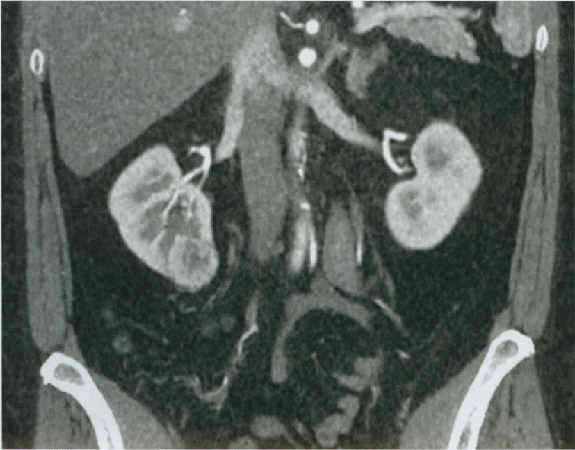
ａ 放射線治療
ｂ 右腎部分切除術
ｃ 右腎尿管全摘除術
ｄ 殺細胞性薬による治療
ｅ 分子標的薬による治療
✅
ｂ 右腎部分切除術
径4cm以下・転移なしの限局性腎細胞癌は腎部分切除術。放射線・化学療法は無効、分子標的薬は転移例の治療。
🔎 腎細胞癌——近位尿細管から出る「偶然みつかる」癌
腎細胞癌の約8割を占める淡明細胞型は近位尿細管上皮に由来し、VHL遺伝子の不活化 → HIF-α の分解不全 → VEGF・PDGF の過剰産生 → 血管新生という一本道で発生する。血管に富むため造影CT では皮髄相で強く濃染し、実質相で急速に洗い出される（wash-out）のが特徴で、これが画像診断の決め手になる。古典的三徴（血尿・側腹部痛・腹部腫瘤）が揃うのは今や1割未満で、現在は7割近くが本例のように検診・人間ドックの超音波やCTで無症状のうちに発見される（incidentaloma）。そのため発見時に小径（4cm以下）である割合が増え、治療の主役が全摘から部分切除へ移った。
腎細胞癌は「放射線も抗癌薬も効かない癌」——だから切れるうちは必ず切るのが原則である。
□ 選択肢の検討
| 選択肢 | 解説 |
|---|---|
| ａ 放射線治療 | 腎細胞癌は放射線抵抗性（radioresistant）の代表格で、根治目的の外照射は成立しない。放射線が使われるのは骨転移の疼痛緩和・脳転移の制御といった緩和目的か、近年の少数転移に対する定位照射（SBRT）に限られる。径2.5cm の限局病変に当てる治療ではない。 |
| ◯ ｂ 右腎部分切除術 | ◯ 径4cm 以下（T1a）で腎の辺縁に位置する腎細胞癌は、腎部分切除術が第一選択。全摘と比べて癌制御は同等でありながら、残存腎機能が保たれ、慢性腎臓病・心血管イベント・死亡が減ることが示されている。本例は下極・2.5cm・転移なし・腎機能正常（Cr 1.0mg/dL）と部分切除の理想的な適応である。 |
| ｃ 右腎尿管全摘除術 | 腎尿管全摘除術（＋膀胱部分切除）は腎盂・尿管癌＝尿路上皮癌の術式である。尿路上皮は尿管・膀胱へ多中心性に再発するので尿管を膀胱壁ごと一塊に取るが、腎実質から出る腎細胞癌に尿管を切除する意味はない。血尿がなく沈渣も正常な本例は尿路上皮癌を示唆しない。 |
| ｄ 殺細胞性薬による治療 | 腎細胞癌は化学療法抵抗性で、近位尿細管由来の腫瘍細胞がP糖蛋白（MDR1）を高発現し薬剤を汲み出すためと説明される。シスプラチンもゲムシタビンも奏効率は一桁で、標準治療になっていない。そもそも転移のない限局癌に全身治療を先行させる理由がない。 |
| ｅ 分子標的薬による治療 | チロシンキナーゼ阻害薬（スニチニブ等）や免疫チェックポイント阻害薬は「転移性・切除不能」腎細胞癌の薬物療法であり、限局癌に対する術前・術後の標準投与ではない。本例は胸腹部CTで転移がなく、手術で根治が狙える段階である。 |
📌 限局性腎細胞癌の治療——大きさと位置で術式が決まる
| 病期・大きさ | 標準治療 | 考え方 |
|---|---|---|
| T1a（≤4cm） | 腎部分切除術（partial nephrectomy） | 癌制御は全摘と同等、腎機能が残る |
| T1b（4〜7cm） | 部分切除も可（位置による）／根治的腎摘除術 | 技術的に可能なら腎温存を優先 |
| T2以上・中心性 | 根治的腎摘除術 | 腎門部・腎盂に及ぶものは温存できない |
| 高齢・合併症で手術困難 | 凍結療法・ラジオ波焼灼／監視療法 | 小径腫瘍は増大速度が遅い |
| 転移あり | 薬物療法（ICI・分子標的薬）±減量的腎摘除術 | NO.51・65 で問われる |
🎯 国試ポイント
①腎細胞癌は放射線抵抗性・化学療法抵抗性。「放射線治療」「シスプラチン」は限局例でも転移例でも切ってよい。②4cm以下（T1a）＝腎部分切除術が第一選択。全摘は「取り切れないとき」。
③腎尿管全摘除術は腎盂・尿管癌（尿路上皮癌）の術式。腎細胞癌と混同しない。
④造影CTで「早期濃染＋wash-out」なら腎細胞癌。腎細胞癌に生検は原則不要（画像で診断し切除する）。
⑤7割は無症状で偶然発見。古典的三徴が揃うのは進行例。
Q.46(117D-72)★📷97%
35 歳の男性。健診で高血圧と腎機能低下を指摘されて来院した。自覚症状はない。父が血液透析を受けていたが、1 年前にクモ膜下出血で突然死した。胸腹部に異常を認めない。下腿に浮腫を認めない。尿所見：蛋白（－）、糖（－）、潜血（－）。血液所見：赤血球444 万、Hb 12.7g/dL、Ht 39％、白血球4,900、血小板21 万。血液生化学所見：総蛋白7.3g/dL、アルブミン4.8g/dL、尿素窒素19mg/dL、クレアチニン1.9mg/dL、尿酸6.6mg/dL、Na 142mEq/L、K 4.5mEq/L、Cl 107mEq/L、Ca 9.1mg/dL。腹部単純CT 冠状断像を示す。
この患者の治療方針を決定するために必要な検査はどれか。
この患者の治療方針を決定するために必要な検査はどれか。
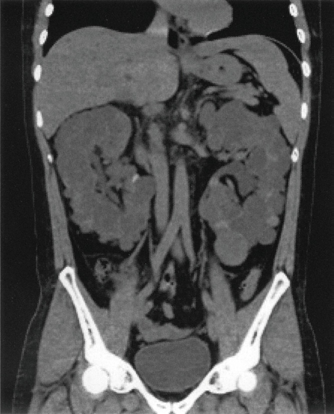
ａ 腎生検
ｂ FDG-PET
ｃ 頭部MRA
ｄ 胸部エックス線撮影
ｅ 上部消化管内視鏡検査
✅
ｃ 頭部MRA
ADPKD＋脳動脈瘤破裂の家族歴。頭部MRAで未破裂脳動脈瘤をスクリーニングする。
🔎 常染色体顕性多発性囊胞腎（ADPKD）——「腎臓だけの病気ではない」
PKD1（16番染色体・約8割）またはPKD2（4番染色体・約1.5割）の変異により、尿細管上皮の一次線毛にあるポリシスチン1／2の機能が失われる。細胞内Ca²⁺低下とcAMP上昇が起こり、尿細管上皮の増殖と液体分泌が亢進して無数の囊胞が形成・増大する。囊胞が正常なネフロンを圧排するため腎は年々腫大し、40〜60歳代で末期腎不全に至る（透析導入原因の第3〜4位）。RAA系の活性化が早期から起こり、腎機能低下より先に高血圧が出るのが典型で、本例も35歳で高血圧とCr 1.9mg/dL を指摘されている。
全身の管腔臓器に病変が出るのが本症の要点で——肝囊胞（最多の腎外病変）・脳動脈瘤・心弁膜症（僧帽弁逸脱）・結腸憩室・鼠径ヘルニア。このうち生命を直接脅かすのは脳動脈瘤の破裂である。
□ 選択肢の検討
| 選択肢 | 解説 |
|---|---|
| ａ 腎生検 | 画像で診断が確定する疾患に生検は不要である。常染色体顕性（優性）多発性囊胞腎はCT・MRI・超音波で両腎に無数の囊胞を見れば診断でき、家族歴があればさらに確実になる。むしろ囊胞だらけの腎を穿刺すれば出血のリスクが高い。 |
| ｂ FDG-PET | 悪性腫瘍の検索・病期診断の検査で、多発性囊胞腎の管理方針を決める材料にはならない。なおFDG-PETが泌尿器で使いにくいのは、FDGが尿中に排泄されて腎・膀胱に強く集積するためでもある。（囊胞感染巣の同定にPETが有用な場面はあるが、本例は感染を疑う所見がない。） |
| ◯ ｃ 頭部MRA | ◯ 常染色体顕性多発性囊胞腎（ADPKD）は脳動脈瘤の合併率が一般人口の約4倍（5〜10％）で、本例は父がクモ膜下出血で突然死という家族歴を持つ。動脈瘤の家族歴がある例は破裂リスクがさらに高く、非侵襲的な頭部MRAでのスクリーニングが強く推奨される。未破裂動脈瘤が見つかれば厳格な降圧・禁煙・部位と大きさによっては予防的治療へ進む——まさに「治療方針を決定するための検査」である。 |
| ｄ 胸部エックス線撮影 | 一般的な健康評価としては行うが、多発性囊胞腎に特異的な合併症を拾う検査ではない。心弁膜異常（僧帽弁逸脱）を疑うなら心エコー、大動脈の評価ならCTであり、単純エックス線では方針が変わらない。 |
| ｅ 上部消化管内視鏡検査 | 多発性囊胞腎の腸管合併症は結腸憩室であり、見るとすれば下部（大腸）内視鏡である。いずれにせよ無症状の段階で治療方針を左右する検査ではない。 |
📌 ADPKDで「探しに行く」合併症
| 合併症 | 頻度・特徴 | 対応 |
|---|---|---|
| 脳動脈瘤 | 5〜10％（一般の約4倍）。家族歴があるとさらに高い | 頭部MRAでスクリーニング。降圧・禁煙 |
| 肝囊胞 | 最も多い腎外病変。女性・経産婦で高度 | 肝機能は保たれる。巨大なら穿刺・開窓術 |
| 高血圧 | 腎機能低下より先行。RAA系亢進 | ACE阻害薬・ARBで厳格に降圧 |
| 囊胞出血・感染 | 側腹部痛・肉眼的血尿・発熱 | 安静・抗菌薬（脂溶性）・難治例はドレナージ |
| 心弁膜症 | 僧帽弁逸脱 | 心エコー |
| 結腸憩室・ヘルニア | 細胞外基質の脆弱性 | 症状があれば対応 |
🎯 国試ポイント
①ADPKD＋家族歴のクモ膜下出血 ＝ 頭部MRA。本章で最も繰り返される型。②診断は画像＋家族歴。腎生検は不要（出血リスクが高く禁忌に近い）。
③腎外病変は肝囊胞・脳動脈瘤・心弁膜症・結腸憩室。肝囊胞はできても肝硬変にはならない（NO.67 の引っかけ）。
④高血圧は腎機能低下より先に出る。ACE阻害薬・ARBで厳格に降圧。
⑤疾患修飾薬はトルバプタン（V2受容体拮抗薬）。高ナトリウム血症・肝障害・多尿に注意する。
Q.47(116D-41)★📷79%
52 歳の男性。人間ドックの超音波検査で左腎の腫瘤を指摘され受診した。意識は清明。身長172cm、体重76kg。体温36.5℃。脈拍72/ 分、整。血圧128/82mmHg。腹部は平坦で、腫瘤を触知しない。尿所見：蛋白（－）、糖（－）、ケトン体（－）、潜血＋、沈渣に異常を認めない。血液所見：赤血球551 万、Hb 14.8g/dL、Ht 45％、白血球5,600、血小板22 万。血液生化学所見：総蛋白7.3g/dL、アルブミン4.8g/dL、総ビリルビン0.9mg/dL、AST 18U/L、ALT 24U/L、LD 179U/L（基準120 〜245）、尿素窒素11mg/dL、クレアチニン0.9mg/dL、尿酸4.9mg/dL、血糖103mg/dL、Na 143mEq/L、K 4.2mEq/L、Cl 105mEq/L、Ca 9.1mg/dL。腹部造影CT を示す。胸部CT、骨シンチグラフィーで異常を認めない。
治療について適切なのはどれか。
治療について適切なのはどれか。
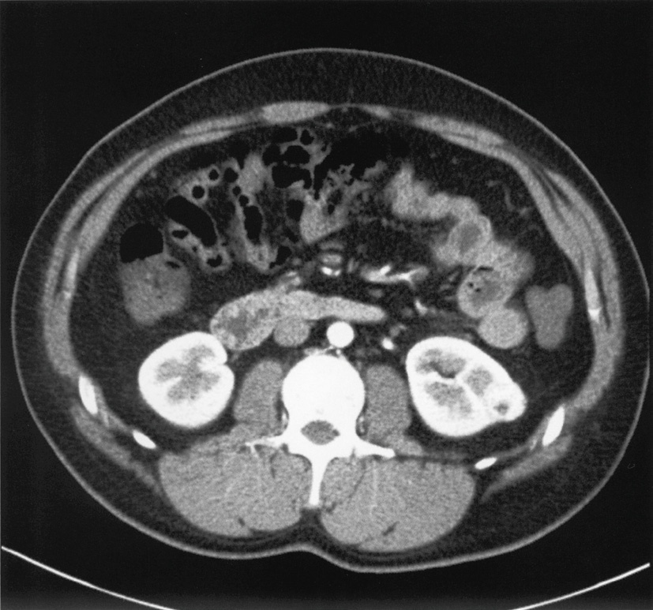
ａ 殺細胞性薬
ｂ 腎部分切除術
ｃ 腎尿管全摘除術
ｄ マイクロ波凝固療法
ｅ 免疫チェックポイント阻害薬
✅
ｂ 腎部分切除術
転移のない限局性腎細胞癌は腎部分切除術。化学療法・免疫チェックポイント阻害薬は転移例の治療。
🔎 造影CTの読み——腎細胞癌は「早く染まって早く抜ける」
腎の造影CTは皮髄相（30〜40秒）・実質相（90〜100秒）・排泄相（5〜10分）の3相で撮る。腎細胞癌（淡明細胞型）はVHL-HIF-VEGF系の活性化で血管に富むため、皮髄相で腎皮質と同等かそれ以上に強く濃染し、実質相では周囲より低吸収に転じる（wash-out）。この「早期濃染＋洗い出し」のパターンが腎細胞癌の診断根拠で、生検を行わずに手術へ進める理由でもある。鑑別の筆頭は血管筋脂肪腫（AML）——脂肪成分（CT値マイナス）が内部にあれば良性のAMLと分かる。脂肪を含まないAMLもあり、その場合は腎細胞癌と区別できない。
単純性囊胞は境界明瞭・内部均一・造影されない。隔壁の肥厚や結節状の造影効果（Bosniak III/IV）があれば囊胞性腎細胞癌を疑う。
□ 選択肢の検討
| 選択肢 | 解説 |
|---|---|
| ａ 殺細胞性薬 | 腎細胞癌は殺細胞性抗癌薬が効かない。近位尿細管由来の細胞がP糖蛋白（MDR1）を高発現していることが一因で、シスプラチンを含むレジメンの奏効率は極めて低い。「腎細胞癌に化学療法」は常に誤りと覚えてよい。 |
| ◯ ｂ 腎部分切除術 | ◯ 転移のない限局性腎細胞癌で、腎機能温存が可能な大きさ・位置であれば腎部分切除術。胸部CTと骨シンチで転移がなく、Cr 0.9mg/dL と腎機能も良好な本例は好適応である。部分切除は全摘と同等の癌制御でありながら、将来の慢性腎臓病・心血管イベントを減らす——「取り切る」ことと「残す」ことを両立させるのが現代の腎癌手術である。 |
| ｃ 腎尿管全摘除術 | 腎盂・尿管の尿路上皮癌に対する術式で、腎細胞癌では過剰である。尿路上皮癌なら尿細胞診陽性・肉眼的血尿・腎盂内の陰影欠損が揃うが、本例は沈渣に異常がなく、腫瘤は腎実質にある。 |
| ｄ マイクロ波凝固療法 | 凍結療法やラジオ波・マイクロ波による焼灼は、高齢・重篤な合併症・単腎などで手術に耐えられない症例の代替である。病理学的な断端評価ができず、長期の癌制御データも手術に劣るため、52歳・合併症なしの本例で第一選択にはならない。 |
| ｅ 免疫チェックポイント阻害薬 | ニボルマブ・ペムブロリズマブ等は転移性・進行腎細胞癌の一次治療であり、転移のない限局癌に用いる薬ではない。（術後補助療法としてのペムブロリズマブは高リスク症例に限った例外で、「治療について適切」を問う本設問の答えにはならない。） |
📌 腎腫瘤の鑑別——造影パターンで分ける
| 病変 | 造影CT所見 | 決め手 |
|---|---|---|
| 腎細胞癌 | 皮髄相で強く濃染し実質相でwash-out | 充実性・不均一・辺縁不整 |
| 血管筋脂肪腫（AML） | 不均一に濃染 | 内部に脂肪（CT値マイナス）。結節性硬化症では両側多発 |
| 腎盂・尿管癌 | 腎盂内の陰影欠損・尿管壁肥厚 | 肉眼的血尿・尿細胞診陽性。腎尿管全摘 |
| 単純性囊胞 | 造影されない・内部均一 | 水と同じCT値。無治療 |
| 腎膿瘍 | 辺縁がリング状に濃染 | 発熱・CRP高値・膿尿 |
| 腎梗塞 | 楔状の造影欠損 | 心房細動・LD著明高値 |
🎯 国試ポイント
①限局性腎細胞癌は手術（部分切除 or 全摘）。薬物・放射線・焼灼は第一選択にならない。②造影CTの「早期濃染＋wash-out」＝腎細胞癌。脂肪があればAML（良性）。
③腎細胞癌に生検は原則行わない（画像で診断し、播種のリスクを避ける）。
④焼灼療法（凍結・RFA）は手術非適応例の代替。
⑤免疫チェックポイント阻害薬・分子標的薬は「転移あり」の薬。
§
B問題（★問題）
Q.48〜Q.55
Q.48(113C-50)★73%
51 歳の女性。左腎細胞癌に対して根治的左腎摘除術を受けている。術後10 か月で、両肺に径1cm 未満の肺転移が複数出現した。
肺転移に対して、まず行うべき治療として適切なのはどれか。2 つ選べ。
肺転移に対して、まず行うべき治療として適切なのはどれか。2 つ選べ。
ａ 手 術
ｂ 分子標的薬
ｃ 放射線照射
ｄ ホルモン療法
ｅ インターフェロン
✅
ｂ・ｅ
転移性腎細胞癌の全身療法は分子標的薬とサイトカイン療法。手術・放射線・ホルモンは選ばない。
🔎 転移性腎細胞癌——殺細胞ではなく「分子」と「免疫」で攻める
腎細胞癌は放射線も殺細胞性抗癌薬も効かない。しかしこの癌には2つの弱点がある——①VHLの不活化により血管新生（VEGF）に強く依存していること、②免疫原性が高く、まれに自然退縮すら起こること。現代の治療はこの2点をそのまま突く。分子標的薬：VEGF受容体チロシンキナーゼ阻害薬（スニチニブ・アキシチニブ・カボザンチニブ・パゾパニブ）とmTOR阻害薬（エベロリムス・テムシロリムス）。副作用は高血圧・手足症候群・甲状腺機能低下・蛋白尿・間質性肺炎。
免疫療法：古典的にはインターフェロンα・IL-2、現在は免疫チェックポイント阻害薬（ニボルマブ＋イピリムマブ、ペムブロリズマブ＋アキシチニブ等）が一次治療。副作用は免疫関連有害事象（irAE）＝甲状腺機能異常・1型糖尿病・大腸炎・間質性肺炎・下垂体炎。
選択肢に「放射線」「シスプラチン」「ホルモン」が並んだら、それは全部雑音である。
□ 選択肢の検討
| 選択肢 | 解説 |
|---|---|
| ａ 手 術 | 転移巣切除（metastasectomy）が成立するのは「単発ないし少数」「長い無病期間の後に出た」転移に限られる。本例は術後10か月と早期で、しかも両肺に複数であり、局所を切っても他の微小転移が残る。まず全身療法を置く場面である。 |
| ◯ ｂ 分子標的薬 | ◯ 転移性腎細胞癌の中心的薬剤。VHLの不活化で過剰になったVEGF・PDGFのシグナルを断つチロシンキナーゼ阻害薬（スニチニブ・パゾパニブ・アキシチニブ）やmTOR阻害薬（エベロリムス）が用いられる。腎細胞癌の発癌機序そのものを叩くので、転移巣がどこにあっても効きうる。 |
| ｃ 放射線照射 | 腎細胞癌は放射線抵抗性で、骨転移の疼痛緩和や脳転移の制御など、緩和目的に限って用いる。両肺に散った複数病変を制御する手段にはならない。 |
| ｄ ホルモン療法 | 腎細胞癌はホルモン依存性の癌ではない。かつて黄体ホルモン製剤が試みられたが無効であることが確定している。泌尿器科でホルモン療法が主役になるのは前立腺癌（アンドロゲン遮断療法）だけである。 |
| ◯ ｅ インターフェロン | ◯ 腎細胞癌は免疫原性が高い癌で、インターフェロンα・インターロイキン2などのサイトカイン療法は分子標的薬が登場する以前から唯一効く全身療法として使われてきた。肺転移のみ・小病変・全身状態良好という条件では奏効が期待できるとされ、本例はまさにその条件に当てはまる。（現在の一次治療の主役は免疫チェックポイント阻害薬へ移ったが、「免疫で叩く癌」という軸は変わらない。） |
📌 転移巣切除が成立する条件
腎細胞癌は転移巣を切除しても延命が期待できる数少ない癌で、NO.52 の「転移巣の手術摘除は行わない」が誤りになるのもこのためである。ただし適応は狭い。| 条件 | 切除が成立 | 薬物を先行 |
|---|---|---|
| 転移巣の数 | 単発・少数 | 多発（本例） |
| 無病期間 | 長い（おおむね1年以上） | 短い（本例は10か月） |
| 臓器 | 肺のみなど単一臓器 | 多臓器に散在 |
| 全身状態 | 良好・切除に耐える | 不良 |
🎯 国試ポイント
①転移性腎細胞癌＝分子標的薬＋免疫療法。放射線・殺細胞性薬・ホルモンは全部切ってよい。②インターフェロンα・IL-2は古典的サイトカイン療法で、現在の主役は免疫チェックポイント阻害薬。
③分子標的薬の副作用＝高血圧・手足症候群・甲状腺機能低下・蛋白尿。
④単発・長い無病期間なら転移巣切除も選択肢になる。
⑤腎細胞癌は自然退縮が起こりうるほど免疫原性が高い——免疫療法が効く根拠である。
Q.49(112D-23)★📷84%
67 歳の女性。根治的右腎摘除術後の治療効果の確認のために来院した。1 年前に長径11cm 大の右腎細胞癌と多発肺転移に対して、根治的右腎摘除術を受けており、術直後から肺転移巣に対してインターフェロンαの自己投与を週3 回施行している。インターフェロン導入11 か月後の治療効果の確認のため受診した。現在、他の疾患は認めていない。体温36.2℃。血圧132/84mmHg。尿所見：蛋白（－）、糖（－）、沈渣に赤血球1 〜5/1 視野、白血球1 〜5/1 視野。血液所見：赤血球420 万、Hb 12.8g/dL、Ht 41％、白血球3,900、血小板17 万。血液生化学所見：総蛋白7.0g/dL、アルブミン3.8g/dL、総ビリルビン1.1mg/dL、AST 34U/L、ALT 36U/L、LD 176U/L（基準176 〜353）、γ-GTP 38U/L（基準8 〜50）、尿素窒素20mg/dL、クレアチニン1.0mg/dL、尿酸7.1mg/dL、血糖96mg/dL、Na 137mEq/L、K 3.9mEq/L、Cl 104mEq/L。CRP 0.1mg/dL。心電図に異常を認めない。11 か月前と今回の胸部CT を示す。
今後の治療として適切なのはどれか。
今後の治療として適切なのはどれか。
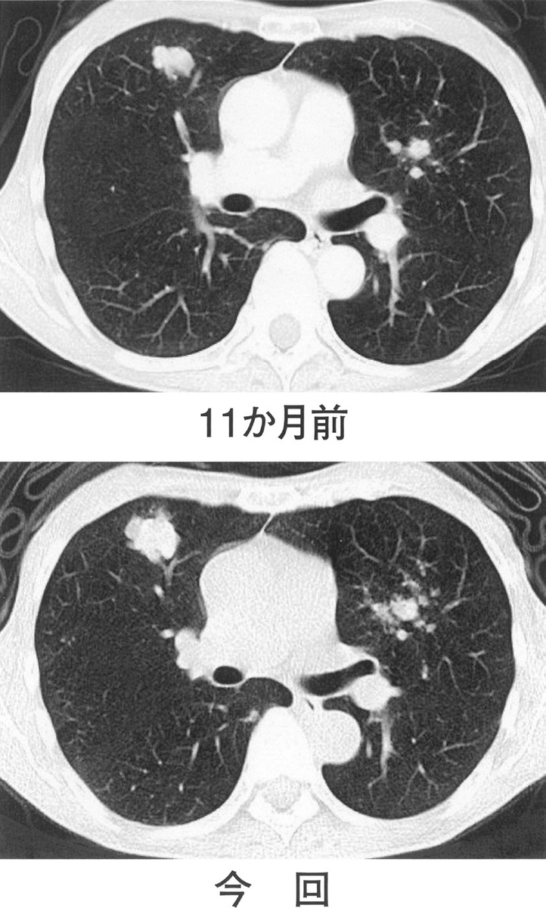
ａ 手術療法への変更
ｂ 分子標的薬への変更
ｃ 放射線治療への変更
ｄ 抗癌化学療法への変更
ｅ インターフェロンαの継続
✅
ｂ 分子標的薬への変更
インターフェロン11か月で肺転移が増大＝無効。機序の異なる分子標的薬へ変更する。
🔎 「効果判定 → 変更」——薬物療法の運転の仕方
転移性癌の薬物療法は投与して終わりではなく、一定期間ごとに画像で効果を判定し、増悪していれば次のラインへ移るという運転をする。効果判定は RECIST（標的病変の径の和の変化）で行い、CR（消失）／PR（30％以上縮小）／SD（不変）／PD（20％以上増大・新病変出現）に分ける。PD となればその薬は無効である。本例は11か月前と今回の胸部CTを並べて比較させ、結節が増大・増数していること（＝PD）を読ませる設問である。検査値・バイタルはいずれも正常範囲で、「全身状態は保たれているので次の治療に移れる」ことを保証している。
腎細胞癌で使える手札は「サイトカイン → 分子標的薬 → 免疫チェックポイント阻害薬」——機序の違う手札へ移ることに意味がある。同じ機序の中で薬を替えても、放射線・化学療法へ逃げても効果は出ない。
□ 選択肢の検討
| 選択肢 | 解説 |
|---|---|
| ａ 手術療法への変更 | 増大した多発肺転移を切除で制御することはできない。転移巣切除は単発・少数で、全身療法が効いて縮小・安定した後に残った病変に対して行う。進行しつつある多発病変に対する手段ではない。 |
| ◯ ｂ 分子標的薬への変更 | ◯ 11か月のインターフェロンαで肺転移巣が増大した＝サイトカイン療法が無効と判定できる。無効な治療を続けず、作用機序の異なる分子標的薬（VEGF受容体TKI・mTOR阻害薬）へ切り替えるのが正しい。腎細胞癌の薬物療法は「効かなければ機序の違う薬へ乗り換える」（sequential therapy）が原則で、本問はその判断を問うている。 |
| ｃ 放射線治療への変更 | 腎細胞癌は放射線抵抗性。多発肺転移の全体を制御する治療にはならず、放射線の出番は骨転移の疼痛・脳転移など緩和目的に限られる。 |
| ｄ 抗癌化学療法への変更 | 腎細胞癌は化学療法抵抗性で、P糖蛋白（MDR1）の高発現により殺細胞性抗癌薬は奏効しない。「効かない治療から、別の効かない治療へ」乗り換えても意味がない。 |
| ｅ インターフェロンαの継続 | 画像で増悪が確認された時点で、その薬は無効と判定される。インターフェロンには発熱・全身倦怠感・骨髄抑制・抑うつといった負担があり、効果がないまま続けるのは害だけを残す。本例では白血球3,900 とすでに骨髄抑制の傾向がみられる。 |
📌 インターフェロンαという薬
| 項目 | 内容 |
|---|---|
| 作用 | NK細胞・細胞傷害性T細胞を活性化し、腫瘍細胞の増殖を抑制 |
| 適応 | 転移性腎細胞癌・慢性骨髄性白血病・多発性骨髄腫・B型/C型慢性肝炎 |
| 投与法 | 皮下・筋注（本例は自己注射を週3回） |
| 副作用 | インフルエンザ様症状（発熱・関節痛）・骨髄抑制・抑うつと自殺企図・間質性肺炎・甲状腺機能異常・網膜症 |
| 禁忌・注意 | 小柴胡湯との併用（間質性肺炎）・うつ病の既往 |
🎯 国試ポイント
①治療効果の判定は画像（前後のCTを比較）で行う。増大＝PD＝無効。②無効なら機序の違う薬へ変更する——サイトカインが効かなければ分子標的薬。
③腎細胞癌に放射線・殺細胞性抗癌薬は最後まで選ばない。
④インターフェロンの副作用は発熱・骨髄抑制・抑うつ・間質性肺炎。小柴胡湯との併用は禁忌。
⑤「変更するか継続するか」を問われたら、まず効果が出ているかを画像で確かめる。
Q.50(111I-62)★📷80%
71 歳の女性。体重減少を主訴に来院した。この2 か月間で体重が2kg 減少している。食欲は正常で全身倦怠感はないという。3 週間前から両下肢のむくみを自覚している。身長150cm、体重48kg。体温36.2℃。血圧136/84mmHg。尿所見：蛋白（－）、糖（－）、沈渣に赤血球10 〜20/1 視野、白血球5 〜10/1 視野。血液所見：赤血球380 万、Hb 11.2g/dL、Ht 38％、白血球6,700、血小板17 万。血液生化学所見：総蛋白6.9g/dL、アルブミン3.7g/dL、総ビリルビン1.1mg/dL、AST 31U/L、ALT 38U/L、LD 412U/L（基準176 〜353）、尿素窒素28mg/dL、クレアチニン1.0mg/dL、尿酸6.4mg/dL、血糖96mg/dL、Na 137mEq/L、K 4.3mEq/L、Cl 114mEq/L。CRP 0.2mg/dL。胸部CT で異常を認めない。腹部造影CT の水平断像（A）と画像再構成による冠状断像（B）とを示す。腹部臓器とリンパ節とに転移を認めない。
この患者に対する適切な治療はどれか。
この患者に対する適切な治療はどれか。
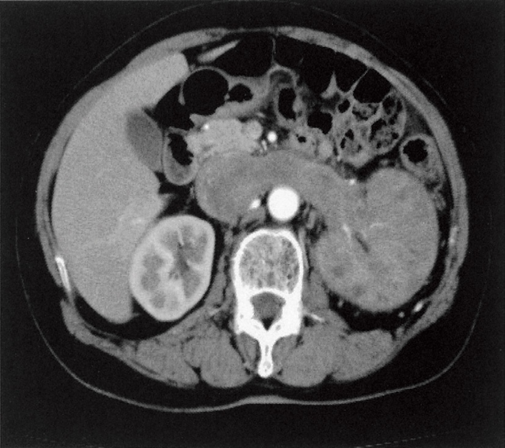
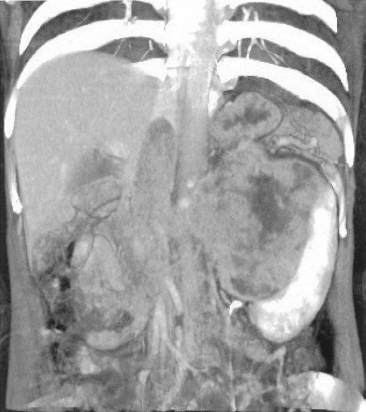
ａ 手術療法
ｂ 免疫療法
ｃ 放射線治療
ｄ ホルモン療法
ｅ 抗癌化学療法
✅
ａ 手術療法
下大静脈腫瘍塞栓（両下肢浮腫）を伴う腎細胞癌。遠隔転移がなければ腎摘除術＋腫瘍塞栓摘除術で根治を狙う。
🔎 腎細胞癌の静脈内進展——「静脈を這って心臓へ向かう癌」
腎細胞癌は腎静脈から下大静脈、さらに右心房へと腫瘍塞栓を伸ばすという他に類を見ない広がり方をする。腎細胞癌の4〜10％に静脈内進展がみられ、1％前後では心房にまで達する。塞栓が下大静脈を塞ぐと両下肢浮腫・腹壁静脈の怒張・症候性の精索静脈瘤（男性）・肺塞栓が出る。本例の「3週間前からの両下肢浮腫」がまさにその所見で、腎機能（Cr 1.0mg/dL）も蛋白尿も正常なので、心不全・腎性・低アルブミン血症による浮腫ではない——「静脈が詰まっている」と読ませる作りである。
重要なのは、静脈内進展があっても遠隔転移がなければ切除で根治しうること。腫瘍塞栓は血管内腔を押し広げて伸びるだけで壁浸潤を伴わないことが多く、静脈を切開して塞栓を摘出できる。だから「脈管進展＝手術不能」と早合点しないのが本問の勘所である。
□ 選択肢の検討
| 選択肢 | 解説 |
|---|---|
| ◯ ａ 手術療法 | ◯ 腎静脈から下大静脈へ腫瘍塞栓が伸びた腎細胞癌（cT3）である。両下肢浮腫は下大静脈が塞栓で閉塞したことによる。遠隔転移が無ければ、脈管に進展していても根治的腎摘除術＋腫瘍塞栓摘除術で根治が狙える——ここが他の癌と大きく違う点で、腎細胞癌の腫瘍塞栓は血管内を「押し広げて伸びる」だけで血管壁への浸潤を伴わないことが多く、静脈を切開して塞栓だけを抜き取れる。塞栓が心房まで達していれば人工心肺を併用する。 |
| ｂ 免疫療法 | サイトカイン療法や免疫チェックポイント阻害薬は転移性・切除不能例の治療である。本例は胸部CTで異常なし・腹部臓器とリンパ節に転移なし——「脈管に伸びている」ことと「転移している」ことは別で、切除できる限りは手術が優先される。 |
| ｃ 放射線治療 | 腎細胞癌は放射線抵抗性で、根治目的では成立しない。腫瘍塞栓を照射で退縮させることもできない。 |
| ｄ ホルモン療法 | 腎細胞癌にホルモン依存性はない。泌尿器科でホルモン療法が効くのは前立腺癌だけである。 |
| ｅ 抗癌化学療法 | 腎細胞癌は化学療法抵抗性で、術前に縮小させて手術を楽にする（ネオアジュバント）ことも標準ではない。 |
📌 腎細胞癌の下大静脈腫瘍塞栓——高さで術式が変わる
| レベル | 塞栓の到達点 | 手術 |
|---|---|---|
| Ⅰ | 腎静脈内〜下大静脈へ2cm以内 | 下大静脈を部分遮断して摘出 |
| Ⅱ | 肝静脈より下の下大静脈 | 下大静脈を遮断・切開して摘出 |
| Ⅲ | 肝静脈より上・横隔膜より下 | 肝授動を加えて遮断 |
| Ⅳ | 右心房内 | 人工心肺（体外循環）を併用 |
🎯 国試ポイント
①腎細胞癌は腎静脈から下大静脈・右心房へ腫瘍塞栓を伸ばす。静脈系であり、大動脈へは進展しない（NO.52 の引っかけ）。②両下肢浮腫・腹壁静脈怒張・症候性精索静脈瘤は下大静脈閉塞のサイン。
③脈管進展があっても遠隔転移がなければ手術（腎摘＋塞栓摘出）で根治を狙う。
④右心房まで達していれば人工心肺を併用する。
⑤LD高値・貧血・体重減少は腫瘍随伴症状としても出る（NO.54 参照）。
Q.51(108D-57)★📷48%
68 歳の男性。健康診断で肺野の異常陰影を指摘され精査のため来院した。身長175cm、体重71kg。体温36.7℃。脈拍64/ 分、整。血圧134/68mmHg。呼吸数12/ 分。心音と呼吸音とに異常を認めない。血液所見：赤血球410 万、Hb 13.1g/dl、Ht 37％、白血球5,700、血小板21 万。血液生化学所見：総蛋白7.1g/dl、アルブミン3.7g/dl、AST 37IU/l、ALT 31IU/l、LD 126IU/l（基準176 〜353）、尿素窒素19mg/dl、クレアチニン1.0mg/dl、Na 136mEq/l、K 4.5mEq/l、Cl 109mEq/l、Ca 9.2mg/dl。CRP 0.2mg/dl。呼吸機能検査所見：％VC 83％、FEV1％ 74％。肺野条件の胸部CT（A）と腹部造影CT 再構成三次元画像（B）とを示す。
治療法として適切なのはどれか。2 つ選べ。
治療法として適切なのはどれか。2 つ選べ。
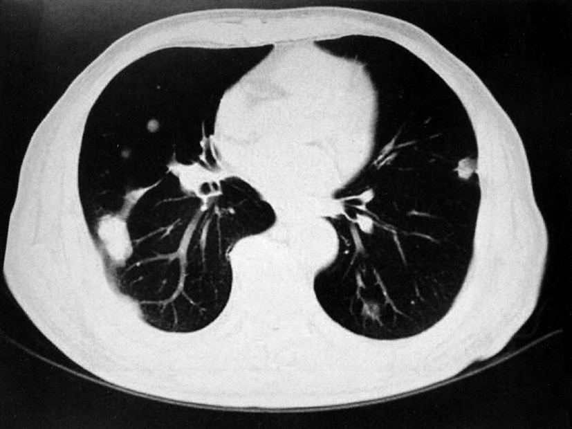
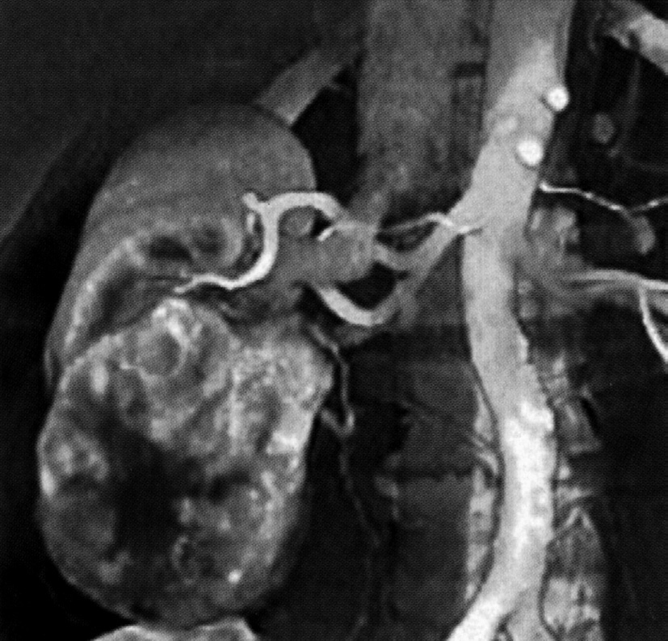
ａ 放射線治療
ｂ 右腎摘出術
ｃ 分子標的薬の経口投与
ｄ 選択的右腎動脈塞栓術
ｅ シスプラチンの点滴静注
✅
ｂ・ｃ
肺転移を伴う腎細胞癌。減量的腎摘除術と分子標的薬（経口TKI）を組み合わせる。
🔎 減量的腎摘除術——「転移があるのに原発巣を切る」理由
通常、遠隔転移のある固形癌では原発巣を切っても予後は変わらない。ところが腎細胞癌では、転移があっても原発巣を摘出したほうが薬物療法の成績が良くなることが古くから知られており、これを減量的（cytoreductive）腎摘除術という。理由として①腫瘍量そのものを減らして薬物の効果を引き出す、②原発巣が産生する免疫抑制因子・血管新生因子を取り除く、③血尿・疼痛・発熱などの腫瘍随伴症状を消すことが挙げられる。まれに原発巣摘出後に転移巣が自然退縮する症例まで報告されており、この癌の免疫学的な特殊性を象徴している。
ただし誰にでも行うわけではない——全身状態（PS）が良く、転移が肺中心で少量、原発巣が安全に切除できることが条件で、全身状態不良・多臓器転移の例では薬物療法を優先する。免疫チェックポイント阻害薬が主流になった現在は適応がより慎重に判断されている。
□ 選択肢の検討
| 選択肢 | 解説 |
|---|---|
| ａ 放射線治療 | 腎細胞癌は放射線抵抗性。肺転移巣にも原発巣にも根治的な照射は行わない。 |
| ◯ ｂ 右腎摘出術 | ◯ 転移があっても原発巣を摘出する「減量的腎摘除術（cytoreductive nephrectomy）」。腫瘍量を減らすことで薬物療法の効きが良くなり、原発巣由来の血尿・疼痛・腫瘍随伴症状も軽減する。全身状態が良く、転移巣が肺に限られ、原発巣が切除可能な症例が適応で、本例（PS良好・肺転移のみ）はこれに当たる。 |
| ◯ ｃ 分子標的薬の経口投与 | ◯ 転移性腎細胞癌の全身療法の中核。スニチニブ・パゾパニブ・アキシチニブなどのVEGF受容体チロシンキナーゼ阻害薬はいずれも経口薬で、VHL不活化に起因する血管新生依存性を断つ。減量的腎摘除術と組み合わせるのが標準的な流れである。 |
| ｄ 選択的右腎動脈塞栓術 | 腎動脈塞栓術は治療そのものではなく、制御困難な腫瘍出血の止血や、巨大腫瘍の術前に出血を減らす目的で行う姑息的手技である。本例は血尿の記載も貧血の進行もなく、塞栓術で癌が制御できるわけでもない。 |
| ｅ シスプラチンの点滴静注 | 腎細胞癌は化学療法抵抗性で、シスプラチンは無効。むしろシスプラチンは腎毒性が強く、腎摘後の単腎患者では不利益が大きい。 |
📌 「転移あり腎細胞癌」の組み立て方
| 手 | やること | 選ぶ理由 |
|---|---|---|
| 減量的腎摘除術 | 原発巣の摘出 | 腫瘍量を減らし薬物の効果を上げる／随伴症状を消す |
| 分子標的薬（経口TKI） | スニチニブ・アキシチニブ等 | VEGF依存性を断つ。全身に効く |
| 免疫チェックポイント阻害薬 | ニボルマブ＋イピリムマブ等 | 現在の一次治療の主役 |
| 転移巣切除 | 単発肺転移などの摘出 | 薬物で安定した後の仕上げ |
| 腎動脈塞栓術 | 止血・術前の出血予防 | 姑息的手技。癌の制御はできない |
| 放射線・シスプラチン | 用いない | 放射線抵抗性・化学療法抵抗性 |
🎯 国試ポイント
①転移があっても原発巣を摘る＝減量的腎摘除術。腎細胞癌に特有の考え方。②分子標的薬（VEGF受容体TKI）は経口薬。「経口投与」という語で選ばせにくる。
③腎動脈塞栓術は止血・術前処置の姑息的手技で、根治治療ではない。
④シスプラチンは腎毒性があり、腎摘後の患者にはとりわけ不利。
⑤健診の「肺野異常陰影」から腎癌に辿り着く型——多発肺結節をみたら原発巣として腎を疑う（cannon ball metastasis）。
Q.52(103I-24)★50%
腎細胞癌で正しいのはどれか。2 つ選べ。
ａ 肺転移を起こしやすい。
ｂ VHL 遺伝子異常が関係する。
ｃ 腫瘍塞栓が大動脈へ進展する。
ｄ 転移巣の手術摘除は行わない。
ｅ 長期透析症例では腎部分切除術を行う。
✅
ａ・ｂ
腎細胞癌は肺転移が最多、VHL遺伝子異常が関与。腫瘍塞栓は静脈系（大動脈へは進展しない）。
🔎 VHL-HIF-VEGF——腎細胞癌のすべてを説明する一本の軸
淡明細胞型腎細胞癌の大半で3p25 のVHL遺伝子が不活化している。正常なVHL蛋白は低酸素誘導因子HIF-αをユビキチン化して分解するが、これが壊れると酸素があってもHIF-αが分解されず蓄積し、「常に低酸素だと勘違いした細胞」になる。その結果VEGF（血管新生）・PDGF（血管の成熟）・TGF-α（増殖）・EPO（赤血球産生）が過剰に作られる。ここから臨床像が一気に導ける——①血管が豊富 ⇒ 造影CTで強く濃染し、破れて血尿を起こす、②EPO過剰 ⇒ 多血症（腫瘍随伴症状）、③VEGF依存 ⇒ 分子標的薬（VEGFR-TKI）が効く。
VHL遺伝子が生殖細胞系列で変異したものがvon Hippel-Lindau病で、両側・多発の腎細胞癌／小脳・網膜の血管芽腫／褐色細胞腫／膵神経内分泌腫瘍を合併する。褐色細胞腫がADPKDではなくVHL病の合併症であることは NO.67 の引っかけになる。
□ 選択肢の検討
| 選択肢 | 解説 |
|---|---|
| ◯ ａ 肺転移を起こしやすい。 | ◯ 腎細胞癌の転移先の第1位は肺で、腎静脈から下大静脈を経て右心系へ流れ込み、最初の毛細血管床である肺で捕まるためである。境界明瞭な円形結節が多発する像（cannon ball metastasis）が典型で、本章の NO.48・49・51・59・65 はすべてこの肺転移を扱っている。肺に次いで骨（溶骨性）・肝・脳・副腎へ転移する。 |
| ◯ ｂ VHL 遺伝子異常が関係する。 | ◯ 3番染色体短腕（3p25）のVHL遺伝子は腎細胞癌（淡明細胞型）の中心的な原因遺伝子である。VHL蛋白はHIF-αをユビキチン化して分解する働きを持ち、これが失われるとHIF-αが蓄積してVEGF・PDGF・EPOが過剰産生される——腎細胞癌が血管に富み、造影CTで強く濃染し、多血症を起こし、VEGF阻害薬（分子標的薬）が効くのはすべてこの一本の道筋で説明できる。von Hippel-Lindau病では若年・両側・多発の腎細胞癌が生じる。 |
| ｃ 腫瘍塞栓が大動脈へ進展する。 | 腫瘍塞栓が伸びるのは静脈系（腎静脈 ⇒ 下大静脈 ⇒ 右心房）であり、動脈系ではない。腫瘍は圧の低い静脈へ押し出されるように進展するのであって、心臓から高圧で血液が流れ出る大動脈へ逆行することはできない。「静脈か動脈か」で迷わせる本問の要で、NO.50（下大静脈塞栓）と対で押さえる。 |
| ｄ 転移巣の手術摘除は行わない。 | 腎細胞癌はむしろ転移巣切除の意義が認められている数少ない癌である。単発ないし少数で、長い無病期間の後に出現した転移（とくに肺）は、切除により長期生存が得られる。NO.48 で「まず行うべき治療」として手術が選ばれなかったのは多発で無病期間が短いからであって、「転移巣は切らない」という原則があるわけではない。 |
| ｅ 長期透析症例では腎部分切除術を行う。 | 長期透析患者に生じる後天性囊胞腎（ACDK）由来の腎癌は、両側・多発・多中心性である。すでに透析中で腎機能を温存する必要がないため、腎部分切除の意義が乏しく、根治的腎摘除術（しばしば両側）を行う。部分切除は「腎機能を残したいから」行う術式——その動機が消えている患者に選ぶ理由はない。 |
📌 腎細胞癌の広がり方——「静脈を這う」と「肺へ飛ぶ」
| 広がり方 | 具体像 | 臨床 |
|---|---|---|
| 静脈内進展 | 腎静脈 ⇒ 下大静脈 ⇒ 右心房 | 両下肢浮腫・症候性精索静脈瘤。転移が無ければ切除で根治しうる |
| 血行性転移 | 肺（最多）＞骨＞肝＞脳＞副腎 | 境界明瞭な多発結節。骨は溶骨性で病的骨折 |
| リンパ行性 | 腎門部・傍大動脈リンパ節 | 頻度は血行性より低い |
| 大動脈への進展 | 起こらない | 本問の誤り肢。動脈は圧が高く逆行できない |
🎯 国試ポイント
①転移先は肺が最多（次いで骨・肝・脳）。多発肺結節をみたら腎を疑う。②原因遺伝子はVHL（3p25）。HIF-α蓄積 ⇒ VEGF過剰 ⇒ 血管に富む・分子標的薬が効く。
③腫瘍塞栓は静脈系のみ。大動脈へは進展しない。
④単発・少数の転移巣は切除する意義がある。
⑤長期透析＋後天性囊胞腎の腎癌は両側多発 ⇒ 部分切除ではなく腎摘除術。
Q.53(97H-46)★
馬蹄鉄腎で正しいのはどれか。2 つ選べ。
ａ 融合腎の一種である。
ｂ 常染色体優性遺伝である。
ｃ 腎長軸線は腎の頭側で交叉する。
ｄ 尿管は腎の後面を通る。
ｅ 水腎症の原因となる。
✅
ａ・ｅ
馬蹄鉄腎は下極癒合の融合腎（散発性）。峡部が尿管を前面から圧迫し水腎症・感染・結石を起こす。
🔎 馬蹄鉄腎——「上昇できなかった腎」が抱える3つの問題
腎は胎生期に骨盤内で発生し、体幹の伸長に伴って腰部まで上昇しながら内側90度回転して腎盂を内側へ向ける。馬蹄鉄腎ではこの過程の最初に両側下極が癒合してしまい、上昇が下腸間膜動脈の起始部で止まり、回転も不完全に終わる。ここから合併症のすべてが導ける。①位置が低い ⇒ 腹部外傷で脊椎に押し付けられて損傷しやすい、②回転が不完全＋峡部が尿管を前から圧迫 ⇒ 腎盂尿管移行部通過障害 ⇒ 水腎症・結石・感染、③下極癒合 ⇒ 腎の長軸が「逆ハの字」になる。
Turner症候群では約3割に馬蹄鉄腎を合併するため、低身長・翼状頸・原発性無月経の女性をみたら腎超音波を行うのが定石である。またWilms腫瘍・腎盂癌・カルチノイドの発生がやや多いことも知られる。
□ 選択肢の検討
| 選択肢 | 解説 |
|---|---|
| ◯ ａ 融合腎の一種である。 | ◯ 馬蹄鉄腎は左右の腎が正中で癒合した「融合腎」の代表で、約90％が下極どうしの癒合である。胎生4〜6週に骨盤内で両側の後腎が接近しすぎて下極が癒合し、上昇の途中で下腸間膜動脈に引っかかって止まる——このため腎の位置が正常より低くなる。頻度は約400〜600人に1人と先天奇形としては多い。 |
| ｂ 常染色体優性遺伝である。 | 馬蹄鉄腎は遺伝性疾患ではなく、大部分が散発性の発生異常である。Turner症候群（45,X）で高頻度に合併するほか、18トリソミー・13トリソミーでも見られるが、それ自体がメンデル遺伝形式をとるわけではない。「常染色体顕性（優性）遺伝の腎疾患」は本章では多発性囊胞腎（ADPKD）である。 |
| ｃ 腎長軸線は腎の頭側で交叉する。 | 下極で癒合するため、左右の腎の長軸を延長すると交点は「尾側（下方）」に来る。正常腎は上極が内側・下極が外側に傾いており長軸は頭側で交叉するが、馬蹄鉄腎ではこの傾きが逆転して「逆ハの字」になる。腹部単純写・CTでこの軸の向きを見るのが読影の第一歩である。 |
| ｄ 尿管は腎の後面を通る。 | 尿管は癒合部（峡部）の「前面」を乗り越えて下行する。峡部が尿管を前方から圧迫し、腎盂尿管移行部の通過障害を起こす——これが次の肢の水腎症につながる。また腎盂が前方を向いている（回転異常）ことも通過障害を助長する。 |
| ◯ ｅ 水腎症の原因となる。 | ◯ 峡部による尿管の圧迫・腎盂の回転異常・高位尿管付着により、腎盂尿管移行部（UPJ）通過障害を来しやすい。結果として水腎症・尿路感染症・尿路結石が三大合併症となる。無症状で偶然発見されることも多いが、感染や結石を繰り返す例、腎機能低下を来す例では峡部離断術や腎盂形成術を行う。 |
📌 腎の位置・形の先天異常
| 異常 | 成り立ち | 臨床的な意味 |
|---|---|---|
| 馬蹄鉄腎 | 下極が正中で癒合（90％）。下腸間膜動脈で上昇が止まる | 水腎症・結石・感染。外傷に弱い。Turner症候群 |
| 骨盤腎（低位腎） | 上昇が起こらず骨盤内に留まる | 骨盤内腫瘤と誤認。分娩の障害 |
| 交叉性異所腎 | 一方の腎が正中を越えて対側にある | 尿管は本来の側の膀胱三角部に開口する |
| 重複腎盂尿管 | 尿管芽の分岐異常 | 上腎からの尿管は低位・内側に開口（Weigert-Meyer則）。尿管瘤・逆流 |
| 腎無形成・低形成 | 後腎が発生しない／小さい | 片側なら代償性肥大で無症状 |
🎯 国試ポイント
①馬蹄鉄腎は下極癒合の融合腎。散発性で遺伝性ではない。②腎の長軸は尾側で交叉する（逆ハの字）。頭側交叉は正常腎。
③尿管は峡部の前面を通り、圧迫されて水腎症・結石・感染を起こす。
④下腸間膜動脈に引っかかって上昇が止まるので位置が低く、腹部外傷で損傷しやすい。
⑤Turner症候群の約3割に合併。Wilms腫瘍の発生もやや多い。
Q.54(94B-61)★
腎細胞癌の腫瘍随伴症はどれか。3 つ選べ。
ａ 発 熱
ｂ 赤血球増加症
ｃ 尿崩症
ｄ 男性化徴候
ｅ 高カルシウム血症
✅
ａ・ｂ・ｅ
腎細胞癌の腫瘍随伴症状は発熱（IL-6）・多血症（EPO）・高Ca血症（PTHrP）。尿崩症・男性化は起こさない。
🔎 腫瘍随伴症候群——腎細胞癌は「内分泌腫瘍のように振る舞う」
腫瘍随伴症候群とは、腫瘍の存在部位や転移とは無関係に、腫瘍が産生する物質によって全身に生じる症状をいう。腎細胞癌は「internist's tumor（内科医の腫瘍）」と呼ばれるほど多彩な随伴症状を出し、約3割の症例で何らかの随伴症状が現れる。EPO ⇒ 多血症／PTHrP ⇒ 高カルシウム血症／IL-6・TNF-α ⇒ 発熱・体重減少・CRP上昇／レニン ⇒ 高血圧。さらに原因不明の肝機能障害（Stauffer症候群：転移がないのにALP・γ-GTPが上がり、腎摘出で正常化する）もこの癌に特有である。
臨床的な意味は2つ——①不明熱・多血症・高Ca血症・原因不明の肝障害をみたら腎を画像で見る、②これらは腫瘍量を反映するので、摘出後に消え、再燃すれば再発を疑う手がかりになる。
□ 選択肢の検討
| 選択肢 | 解説 |
|---|---|
| ◯ ａ 発 熱 | ◯ 腫瘍細胞が産生するIL-6・TNF-αなどのサイトカインによる腫瘍熱で、腎細胞癌の約2割にみられる。感染巣がないのに続く微熱・不明熱の原因として腎細胞癌は必ず鑑別に挙がる。腫瘍摘出で速やかに解熱するのが特徴である。 |
| ◯ ｂ 赤血球増加症 | ◯ 腫瘍細胞がエリスロポエチン（EPO）を産生するために起こる。VHL不活化 ⇒ HIF-α蓄積 ⇒ EPO過剰産生という機序で、この癌の分子病態から直接説明できる。腎細胞癌は「多血症を起こす癌」の代表（他に肝細胞癌・小脳血管芽腫・子宮筋腫）。一方で実際には貧血のほうが多い（慢性炎症・出血による）ため、「多血症も起こしうる」という位置づけで覚える。 |
| ｃ 尿崩症 | 尿崩症は下垂体後葉からのADH分泌低下（中枢性）または腎の反応性低下（腎性）で起こる。腫瘍随伴症状として問題になるのはむしろ逆のSIADH（肺小細胞癌）であり、腎細胞癌が尿崩症を起こすことはない。 |
| ｄ 男性化徴候 | アンドロゲン過剰による男性化は副腎皮質癌・卵巣の男性化腫瘍で起こる。腎細胞癌に性ホルモン産生能はない。副腎は腎の上に乗っているが別の臓器であり、産生するホルモンも由来組織も異なる。 |
| ◯ ｅ 高カルシウム血症 | ◯ 腫瘍細胞が産生するPTHrP（副甲状腺ホルモン関連蛋白）による。PTHと同じ受容体に作用して骨吸収と尿細管でのCa再吸収を高め、PTH自体は抑制される（Ca高値・P低値・PTH低値）のが特徴。溶骨性骨転移による高Ca血症も加わりうる。PTHrP産生腫瘍の代表は肺扁平上皮癌・腎細胞癌・成人T細胞白血病である。 |
📌 腎細胞癌の腫瘍随伴症状
| 症状 | 原因物質 | 検査所見 |
|---|---|---|
| 発熱（腫瘍熱） | IL-6・TNF-α | 感染巣なし・CRP上昇・摘出で解熱 |
| 多血症 | エリスロポエチン | Hb・Ht上昇。EPO高値 |
| 高カルシウム血症 | PTHrP | Ca高値・P低値・PTH低値 |
| 高血圧 | レニン | 低K血症を伴うことがある |
| Stauffer症候群 | IL-6等（機序未確定） | 肝転移が無いのにALP・γ-GTP上昇。腎摘で正常化 |
| 貧血・体重減少・アミロイドーシス | 慢性炎症 | 実際には貧血のほうが多い |
🎯 国試ポイント
①発熱・多血症・高Ca血症が腎細胞癌の三大腫瘍随伴症状。②多血症はEPO、高Ca血症はPTHrP、発熱はIL-6。物質名まで結びつける。
③Stauffer症候群＝肝転移が無いのに肝酵素が上がる。腎摘で改善する。
④男性化は副腎皮質癌、SIADHは肺小細胞癌——他癌の随伴症状と混同しない。
⑤PTHrP産生腫瘍は肺扁平上皮癌・腎細胞癌・ATL。
Q.55(86B-93)★
精索静脈瘤の原因となるのはどれか。
ａ 鼠径ヘルニア
ｂ 停留精巣（睾丸）
ｃ 精巣（睾丸）腫瘍
ｄ 腎細胞癌
ｅ 前立腺癌
✅
ｄ 腎細胞癌
左精巣静脈は左腎静脈へ流入する。腎細胞癌による腎静脈の閉塞・圧迫は症候性精索静脈瘤を起こす。
🔎 精索静脈瘤——左に多い理由と、「右にできたら危ない」理由
精索静脈瘤は精索内の蔓状静脈叢が拡張・蛇行した状態で、90％以上が左側に生じる。理由は左右の静脈の還流経路の非対称にある。右精巣静脈は下大静脈へ鋭角に合流するのに対し、左精巣静脈は左腎静脈へ直角に合流し、しかも走行が長い。さらに左腎静脈は上腸間膜動脈と腹大動脈に挟まれて圧迫されやすい（ナットクラッカー現象）ため、左側は構造的に還流が悪い。
この理屈を裏返すと、「右の精索静脈瘤」「急に出現した精索静脈瘤」「臥位で消えない精索静脈瘤」は構造的な理由では説明できない——腎腫瘍・後腹膜腫瘍による静脈閉塞を疑い、腹部造影CTを撮る。NO.50 の下大静脈腫瘍塞栓と同じ現象を、男性の陰囊側から見ているのが本問である。
□ 選択肢の検討
| 選択肢 | 解説 |
|---|---|
| ａ 鼠径ヘルニア | 鼠径ヘルニアは腹腔内臓器が鼠径管や大腿輪から脱出する病態で、陰囊内に腸管が下降すると陰囊が腫大するが、蔓状静脈叢の拡張ではないので精索静脈瘤とは別である。触診では咳嗽で膨隆が増強し、還納できる点が異なる。 |
| ｂ 停留精巣（睾丸） | 停留精巣は精巣が陰囊内へ下降しない状態で、妊孕性低下と精巣腫瘍のリスク上昇が問題になる。静脈還流の障害を起こすわけではなく、精索静脈瘤の原因にはならない。 |
| ｃ 精巣（睾丸）腫瘍 | 精巣腫瘍は無痛性・石様硬の腫大として現れ、後腹膜リンパ節へ転移する。腫大した後腹膜リンパ節が腎静脈を圧迫すれば二次的に静脈瘤を生じうるが、「精索静脈瘤の原因」として国試で問われるのは腎細胞癌である。 |
| ◯ ｄ 腎細胞癌 | ◯ 左精巣静脈は左腎静脈へ直角に流入するため、左腎の腫瘍が腎静脈内に腫瘍塞栓を作る、あるいは腫瘍が腎静脈を圧迫すると、精巣静脈の還流が妨げられて蔓状静脈叢が拡張する。これが症候性（続発性）精索静脈瘤で、①成人になってから急に出現した、②臥位にしても消退しない、③右側に生じた——このいずれかがあれば腎腫瘍を疑って腹部の画像検査を行う。 |
| ｅ 前立腺癌 | 前立腺癌は骨盤内から造骨性の骨転移を起こす癌で、腎静脈・精巣静脈の還流路とは離れている。精索静脈瘤の原因にはならない。 |
📌 精索静脈瘤——特発性と症候性
| 特発性（原発性） | 症候性（続発性） | |
|---|---|---|
| 側 | 左が90％以上 | 左右どちらも。右なら要注意 |
| 発症 | 思春期以降に徐々に | 成人で急に出現 |
| 臥位 | 臥位で消退する | 臥位でも消退しない |
| 原因 | 左精巣静脈の直角流入・弁不全 | 腎細胞癌・後腹膜腫瘍による静脈閉塞 |
| 対応 | 男性不妊・疼痛があれば内精巣静脈結紮術 | 腹部造影CTで原疾患を検索 |
🎯 国試ポイント
①精索静脈瘤の90％以上は左。左精巣静脈が左腎静脈へ直角に流入するため。②急に出現・臥位で消えない・右側 ⇒ 腎細胞癌などの症候性を疑い腹部CT。
③特発性は男性不妊の最多原因で、内精巣静脈結紮術で改善しうる。
④診察は立位・Valsalva法。「虫の袋」様。
⑤左腎静脈はSMAと大動脈に挟まれる（ナットクラッカー現象）——左の血尿・腰痛の原因にもなる。
§
A問題
Q.56
Q.56(116A-22)📷95%
22 歳の男性。健診で腎機能低下を指摘され心配になり来院した。母親と叔父が透析治療を受けている。血液生化学所見：尿素窒素28mg/dL、クレアチニン1.5mg/dL。腹部MRI を示す。
この疾患で誤っているのはどれか。
この疾患で誤っているのはどれか。
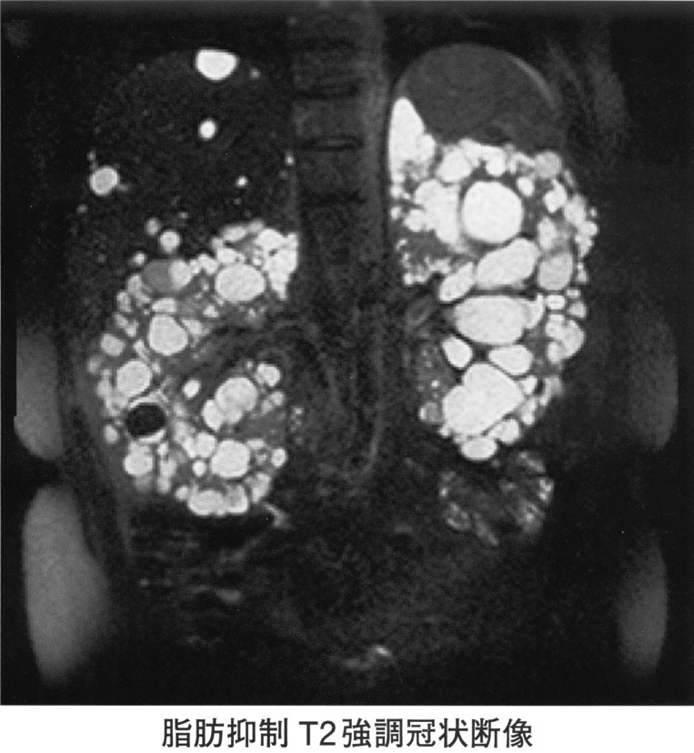
ａ 肝囊胞の合併が多い。
ｂ 常染色体優性型である。
ｃ 新生児期から発症する。
ｄ 脳動脈瘤の発生頻度が高い。
ｅ 治療薬にバソプレシンV2 受容体拮抗薬がある。
✅
ｃ 新生児期から発症する。
新生児期から発症するのはARPKD（常染色体潜性）。ADPKDは成人型で30〜40歳代から症状が出る。
🔎 ADPKD と ARPKD——「成人型」と「乳児型」は別の病気
名前が似ているだけで、遺伝形式・発症時期・肝病変・予後のすべてが異なる。ADPKD（常染色体顕性）はPKD1／PKD2の変異により尿細管上皮の一次線毛のポリシスチン機能が失われ、成人になってから囊胞が増大して40〜60歳代で末期腎不全に至る。囊胞はネフロンのどの部位からも発生し、大小不同で腎全体が凹凸に腫大する。ARPKD（常染色体潜性）はPKHD1の変異でフィブロシスチンが失われ、集合管が一様に紡錘状拡張する。胎児期から両腎が巨大化して羊水過少を来し、Potter顔貌・肺低形成で新生児期に死亡することも多い。生存例では先天性肝線維症による門脈圧亢進症（食道静脈瘤・脾腫）が必発で、ここがADPKDの「肝囊胞（肝機能は正常）」と決定的に違う。
画像でも区別できる——ADPKDは大小不同の囊胞が集簇、ARPKDは超音波で腎が一様に高輝度で腫大する。
□ 選択肢の検討
| 選択肢 | 解説 |
|---|---|
| ａ 肝囊胞の合併が多い。 | 正しい。肝囊胞はADPKDで最も頻度の高い腎外病変で、年齢とともに増え、壮年期には8割以上に認められる。女性・経産婦でエストロゲンの影響により高度になりやすい。ただし肝実質は保たれるので肝機能障害や肝硬変には至らない（NO.67 の要）。 |
| ｂ 常染色体優性型である。 | 正しい。PKD1（16番染色体・約78％）またはPKD2（4番染色体・約15％）の変異による常染色体顕性（優性）遺伝である。親が罹患していれば子は男女とも50％の確率で受け継ぐ（NO.57）。本例も母親と叔父が透析中という縦の家系歴を持つ。 |
| ◯ ｃ 新生児期から発症する。 | ◯ これが誤り。ADPKDは「成人型」多発性囊胞腎とも呼ばれ、囊胞は生下時から存在しても症状は30〜40歳代から出る。本例も22歳で無症状のまま健診で腎機能低下を指摘されたという経過である。新生児期から発症するのは常染色体潜性（劣性）多発性囊胞腎（ARPKD）で、PKHD1遺伝子変異により胎児期から巨大な両腎・羊水過少・Potter顔貌・肺低形成を来し、先天性肝線維症を必発で合併する——まったく別の疾患である。 |
| ｄ 脳動脈瘤の発生頻度が高い。 | 正しい。合併率は5〜10％で一般人口の約4倍。家族にクモ膜下出血の既往があればさらに高いため、頭部MRAによるスクリーニングを行う（NO.46・58・64）。ADPKD患者の死因としても重要である。 |
| ｅ 治療薬にバソプレシンV2 受容体拮抗薬がある。 | 正しい。トルバプタンはADPKDに保険適用を持つ唯一の疾患修飾薬である。バソプレシンV2受容体を遮断して集合管でのcAMP産生を抑え、囊胞上皮の増殖と液体分泌を減らして腎容積の増大と腎機能低下を遅らせる。副作用は多尿・口渇・高ナトリウム血症・肝機能障害で、定期的な肝機能検査が要る。 |
📌 ADPKD と ARPKD の対比
| ADPKD（成人型） | ARPKD（乳児型） | |
|---|---|---|
| 遺伝形式 | 常染色体顕性（優性） | 常染色体潜性（劣性） |
| 責任遺伝子 | PKD1（16番）・PKD2（4番） | PKHD1（6番） |
| 発症 | 30〜40歳代（成人） | 胎児期〜新生児期 |
| 囊胞 | ネフロン全長から。大小不同 | 集合管が一様に拡張 |
| 肝 | 肝囊胞（肝機能は正常） | 先天性肝線維症 ⇒ 門脈圧亢進症 |
| 腎外病変 | 脳動脈瘤・心弁膜症・結腸憩室 | 羊水過少・Potter顔貌・肺低形成 |
| 治療 | 降圧（ARB/ACE-I）・トルバプタン・透析/移植 | 呼吸管理・透析/移植 |
🎯 国試ポイント
①ADPKDは成人型。新生児発症はARPKD——本問の核心。②ADPKDの肝病変は肝囊胞で肝機能は正常。ARPKDは先天性肝線維症。
③脳動脈瘤の合併率5〜10％。頭部MRAでスクリーニング。
④治療薬トルバプタン（V2受容体拮抗薬）。副作用は多尿・高Na血症・肝障害。
⑤ADPKDは日本の透析導入原因の上位（第3〜4位）。
§
B問題
Q.57〜Q.69
Q.57(115C-41)CBT📷96%
25 歳の女性。3 か月前に虫垂炎で入院した際行われた腹部超音波検査で腎臓の異常を指摘され、母の腎臓病が遺伝していないか心配で検査を希望して来院した。母は58 歳で、遺伝性腎疾患のため1 か月前から透析をしている。母方祖父も60 歳から同病で透析をしており、5 年前に脳出血で亡くなった。父方の家系に同病の人はいない。身長160cm、体重51kg。血圧110/70mmHg。脈拍80/ 分、整。心音と呼吸音とに異常を認めない。腹部は平坦、軟で、腫瘤は触知しない。尿所見：蛋白（－）、糖（－）、潜血反応（－）。腹部造影CT を示す。母と同病であると診断された。近く、結婚予定で挙児希望がある。パートナーの家系に同病の人はいない。
この患者の子どもが同遺伝性腎疾患を有する確率はどれか。
※原文は「男児（％）／女児（％）」の2列の表。各選択肢に列見出しを埋め込んで書き起こした。
この患者の子どもが同遺伝性腎疾患を有する確率はどれか。
※原文は「男児（％）／女児（％）」の2列の表。各選択肢に列見出しを埋め込んで書き起こした。
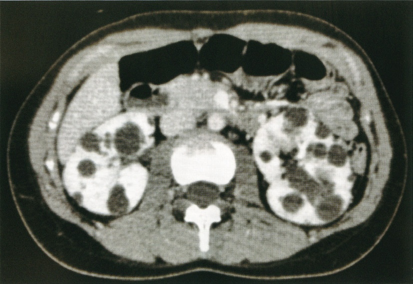
ａ 男児 0％／女児 0％
ｂ 男児 50％／女児 0％
ｃ 男児 0％／女児 50％
ｄ 男児 25％／女児 25％
ｅ 男児 50％／女児 50％
✅
ｅ 男児 50％／女児 50％
常染色体顕性（優性）遺伝は性別に依存せず、罹患者の子は男女とも50％で罹患する。
🔎 家系図の読み——「縦に連続」「男女とも」なら常染色体顕性
遺伝形式の判定は次の3点で決まる。①世代が連続するか（顕性）／飛ぶか（潜性）、②男女差があるか（X連鎖）／ないか（常染色体）、③父から息子へ伝わるか（伝わらなければX連鎖の可能性）。本例は母方祖父（男性）⇒ 母（女性）⇒ 本人（女性）と3世代連続し、男女ともに罹患している。これは常染色体顕性（優性）遺伝そのものである。
祖父が「60歳から透析」「5年前に脳出血で死亡」、母が「58歳で透析」——この2つは単なる背景ではなく、ADPKDの自然歴（40〜60歳代で末期腎不全）と脳血管合併症を示す診断の手がかりとして置かれている。本人は25歳・血圧110/70・尿所見正常で、この時期はまだ無症状であることも同時に示している。
□ 選択肢の検討
| 選択肢 | 解説 |
|---|---|
| ａ 男児 0％／女児 0％ | 患者本人が発症しているので、子へ伝わらないということはない。常染色体顕性（優性）遺伝では、罹患者はヘテロ接合体（Aa）であり、減数分裂で必ず半数の配偶子に変異アレルが入る。確率0％はありえない。 |
| ｂ 男児 50％／女児 0％ | 男児だけに伝わるのはY連鎖遺伝で、この形をとる疾患はごく限られる（Y染色体上の造精機能関連遺伝子など）。PKD1は16番染色体、PKD2は4番染色体にあり、いずれも常染色体である。 |
| ｃ 男児 0％／女児 50％ | これは罹患男性からX連鎖遺伝する場合の形で、父の唯一のX染色体は必ず娘に渡り、息子には渡らない（例：X連鎖のAlport症候群の父）。しかし本例は母親（女性）が罹患者であり、疾患も常染色体上なので該当しない。 |
| ｄ 男児 25％／女児 25％ | 25％は常染色体潜性（劣性）遺伝で両親がともに保因者の場合の再発率である。本症は顕性（優性）遺伝であり、しかもパートナーの家系に同病者がいないので、この形にはならない。（25％になるのは常染色体潜性多発性囊胞腎＝ARPKD の家系である。） |
| ◯ ｅ 男児 50％／女児 50％ | ◯ 常染色体顕性（優性）遺伝＝罹患者（Aa）×非罹患者（aa）の子は男女に関係なく2分の1が罹患する。常染色体上の遺伝子なので性別に依存せず、罹患者はヘテロ接合体なので変異アレルを渡す確率は50％——この2つを合わせて男児50％・女児50％となる。家系図も母方祖父 ⇒ 母 ⇒ 本人と世代を飛ばさず縦に連続しており、男女ともに罹患している点が常染色体顕性遺伝を裏づける。 |
📌 遺伝形式ごとの再発率
| 遺伝形式 | 子への確率 | 腎疾患の例 |
|---|---|---|
| 常染色体顕性（優性） | 男女とも50％ | ADPKD・von Hippel-Lindau病・結節性硬化症 |
| 常染色体潜性（劣性） | 保因者同士なら男女とも25％ | ARPKD・Bartter症候群・シスチン尿症 |
| X連鎖（罹患父） | 娘は全員・息子は0％ | Alport症候群（80％はX連鎖）・Fabry病 |
| X連鎖（保因者母） | 息子の50％が発症・娘の50％が保因 | 同上 |
| Y連鎖 | 息子は全員・娘は0％ | 造精機能異常など（極めて稀） |
🎯 国試ポイント
①常染色体顕性（優性）＝男女とも50％。性別で差がついたらX連鎖・Y連鎖。②25％は常染色体潜性で両親が保因者の場合。ARPKDがこれ。
③家系図が縦に連続し男女ともに罹患 ⇒ 常染色体顕性。
④ADPKDは40〜60歳代で末期腎不全、脳動脈瘤・脳出血が家系に出る。
⑤発症前診断は本人の自己決定が原則。未成年への検査は慎重に。
Q.58(111G-44)📷82%
32 歳の女性。腹部膨満感を主訴に来院した。母親が慢性腎不全で血液透析を受けている。両側季肋部から両側側腹部に腫瘤を触知し、軽度の圧痛を認める。血圧146/92mmHg。尿所見：蛋白（±）、潜血（－）。血液生化学所見：尿素窒素20mg/dL、クレアチニン1.2mg/dL。左の側腹部の腹部超音波像（A）と腹部CT の冠状断像（B）とを示す。
次に行うべき検査はどれか。
次に行うべき検査はどれか。
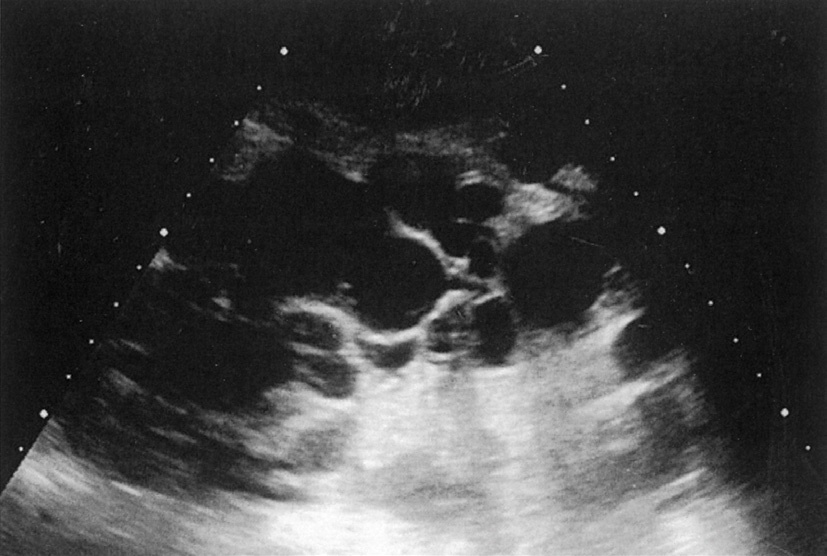
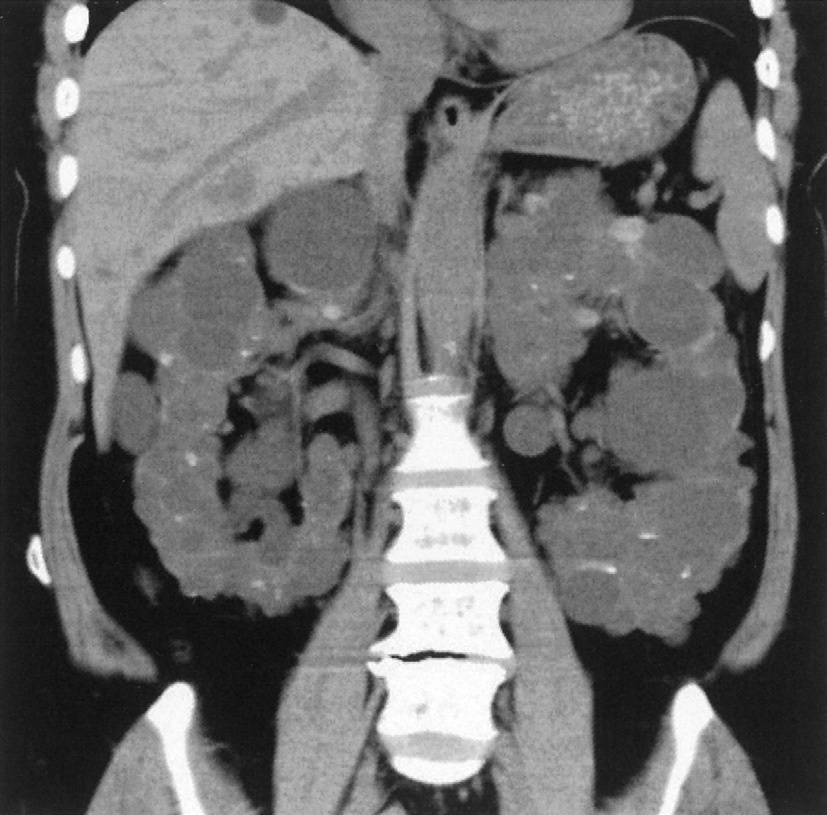
ａ 腎生検
ｂ 頭部MRA
ｃ 排泄性尿路造影
ｄ 下部消化管内視鏡
ｅ ガリウムシンチグラフィ
✅
ｂ 頭部MRA
ADPKDと診断したら次は頭部MRAで脳動脈瘤を探す。非侵襲的で腎機能低下例にも安全。
🔎 ADPKDの画像——超音波とCTで何を見るか
超音波はADPKDのスクリーニングの第一選択で、両腎に大小不同の無エコー領域（囊胞）が多数集簇し、腎全体が腫大して輪郭が凹凸になる。診断基準は年齢別に定められており、15〜39歳では両腎あわせて3個以上、40〜59歳では各腎に2個以上の囊胞で（家族歴がある場合）診断できる。CT・MRIでは囊胞の数と腎容積が正確に測れる。総腎容積（TKV）は将来の腎機能低下速度を予測する指標で、トルバプタンの適応判断（TKV 750mL以上かつ年5％以上の増大）にも用いられる。
本例が示す所見は3つ——①両側季肋部から側腹部に触れる腫瘤（腫大した両腎）、②血圧146/92mmHg（腎機能低下より先に出る高血圧）、③母親が透析中（家族歴）。この3点だけで診断は事実上ついており、設問は「次の一手」を問うている。
□ 選択肢の検討
| 選択肢 | 解説 |
|---|---|
| ａ 腎生検 | 画像で両腎に無数の囊胞が確認でき、家族歴もあるので診断は確定している。囊胞に富む腫大した腎を穿刺すれば出血の危険が高いため、ADPKDにおける腎生検は行わない。 |
| ◯ ｂ 頭部MRA | ◯ ADPKDと診断がついたら、次に探すのは脳動脈瘤。合併率は5〜10％と一般人口の約4倍で、破裂すればクモ膜下出血となり致死的である。MRAは造影剤も被曝も不要な非侵襲的検査で、腎機能が低下した患者（造影剤腎症のリスクがある）にも安全に行える点が重要。未破裂動脈瘤が見つかれば厳格な降圧・禁煙指導を行い、大きさ・部位によっては予防的治療を検討する。 |
| ｃ 排泄性尿路造影 | 腎盂・尿管の形態を見る検査で、囊胞に圧排された腎盂が「蜘蛛の脚（spider leg）」様に伸展する所見は古典的に知られるが、CTで診断がついた後にあえて追加する意味はない。ヨード造影剤は腎機能低下例では避けたい。 |
| ｄ 下部消化管内視鏡 | ADPKDには結腸憩室の合併があるので選択肢としては筋が通るが、無症状の段階で命に関わるのは脳動脈瘤のほうである。「次に行うべき」＝優先順位を問われているので、こちらは後回しになる。 |
| ｅ ガリウムシンチグラフィ | 炎症巣・腫瘍の検索に用いる核医学検査で、囊胞感染が疑われる場面（発熱・腰背部痛・CRP上昇）なら意味があるが、本例は発熱もCRP上昇の記載もない。 |
📌 ADPKDの管理——見つけた後に何をするか
| やること | 内容 | 理由 |
|---|---|---|
| 頭部MRA | 脳動脈瘤のスクリーニング | 合併率5〜10％。破裂すれば致命的 |
| 厳格な降圧 | ACE阻害薬・ARBを第一選択に130/80mmHg未満 | 腎機能低下と心血管イベント・動脈瘤破裂を抑える |
| トルバプタン | V2受容体拮抗薬 | 囊胞増大と腎機能低下を遅らせる唯一の薬 |
| 生活指導 | 飲水励行・減塩・禁煙。腹部を打つ運動を避ける | 囊胞出血の予防・バソプレシン分泌の抑制 |
| 合併症対応 | 囊胞感染（脂溶性抗菌薬）・囊胞出血（安静）・尿路結石 | NO.63 で問われる |
| 腎代替療法 | 透析・腎移植 | 40〜60歳代で末期腎不全に至る |
🎯 国試ポイント
①ADPKDの次の一手は頭部MRA。非侵襲的・造影剤不要・腎機能低下例にも安全。②腎生検は不要（出血リスク）。診断は画像と家族歴でつく。
③高血圧は腎機能低下より先に出る。ACE阻害薬・ARBで厳格に降圧。
④結腸憩室も合併するが、優先度は脳動脈瘤が上。
⑤超音波は年齢別の囊胞数で診断できる。CT・MRIでTKVを測る。
Q.59(110I-55)📷95%
78 歳の男性。腎細胞癌術後の経過観察のため来院した。3 年前に別の医療機関で左腎細胞癌に対して根治的左腎摘除術を受けている。以後、6 か月ごとに胸腹部のCT 検査を受けていた。6 か月前の胸部CT で右肺に直径9mm の単発性の腫瘤を指摘されたが担当医との相談で3 か月ごとの経過観察となった。3 か月前の胸部CT では変化を認めない。1 か月前に転居し、今回定期検査のために紹介されて受診した。自覚症状を認めない。体温35.9℃。血圧128/84mmHg。尿検査に異常を認めない。血液所見と血液生化学所見とに異常を認めない。CRP 0.1mg/dL。診療情報提供書に添付された3 か月前の胸部CT（A）と今回の胸部CT（B）とを示す。胸部以外に新たな病変の出現を認めない。
現時点の対応として適切なのはどれか。
現時点の対応として適切なのはどれか。
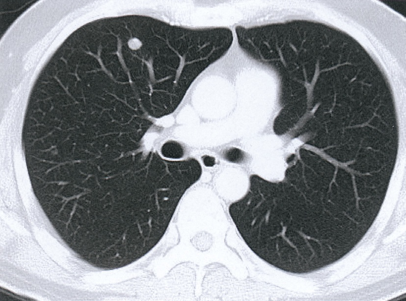
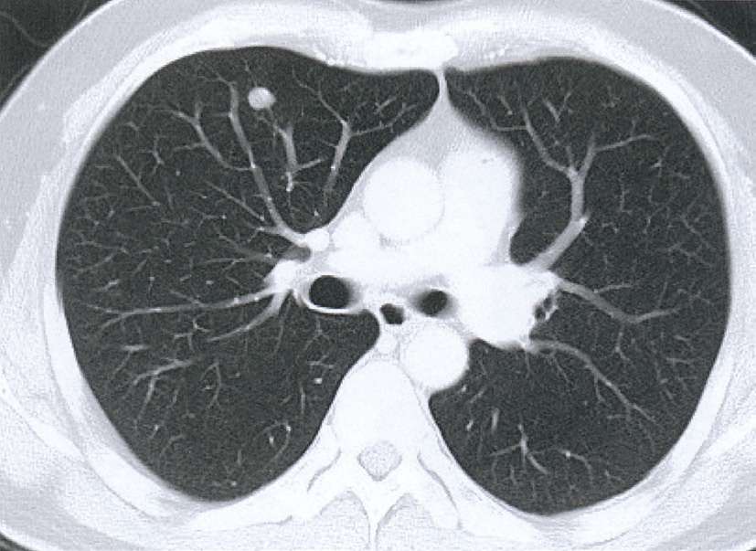
ａ 放射線治療
ｂ 抗癌化学療法
ｃ 分子標的薬投与
ｄ 右肺上葉切除術
ｅ 経過観察（3 か月後の再診）
✅
ｅ 経過観察（3 か月後の再診）
6か月間サイズが変わらない単発9mm肺結節。増大がなければ治療せず、同じ間隔で経過観察する。
🔎 「時間」を診断に使う——増大速度で良悪と治療の要否を決める
小さな肺結節をみたとき、その場で悪性か良性かを決められないことは多い。そこで使うのが時間軸である。腫瘍の体積が2倍になるまでの時間（doubling time）は悪性度と直結し、一定期間まったく変化しない病変は、たとえ腫瘍でも治療の緊急性が低い。本例で与えられている情報を並べると意図が見える——①6か月前に発見、②3か月前は不変、③今回も不変（AとBの比較）、④単発、⑤自覚症状なし、⑥血液検査正常、⑦他に新病変なし、⑧78歳。これらはすべて「今は動かなくてよい」方向に働く情報である。
逆に治療へ舵を切るのは——増大が確認された／数が増えた／症状が出た／他臓器に病変が出たとき。NO.48・49・51・65 はいずれもその条件を満たしているから治療するのであって、「転移＝直ちに治療」という反射は誤りである。
□ 選択肢の検討
| 選択肢 | 解説 |
|---|---|
| ａ 放射線治療 | 腎細胞癌は放射線抵抗性であり、そもそも増大していない9mmの結節に対して治療を始める根拠がない。 |
| ｂ 抗癌化学療法 | 腎細胞癌は化学療法抵抗性。78歳という年齢を考えても、有害事象だけを負わせることになる。 |
| ｃ 分子標的薬投与 | 分子標的薬は「増大する転移巣」に対して用いる。高血圧・手足症候群・甲状腺機能低下・蛋白尿など負担の大きい薬を、6か月間まったく変化のない単発9mm結節のために開始する利益はない。 |
| ｄ 右肺上葉切除術 | 転移と確定していない9mmの結節に対して肺葉切除は過剰である。この大きさでは炎症性瘢痕・肉芽腫・良性腫瘍の可能性も残る。転移巣切除が検討されるのは増大が確認され、転移と診断でき、切除で根治が狙える場合に限られる。 |
| ◯ ｅ 経過観察（3 か月後の再診） | ◯ 6か月前に指摘され、3か月前も今回も大きさが変わらない単発9mm結節である。増大速度（doubling time）は悪性度を反映する最も実用的な指標で、6か月間不変ということは、転移だとしてもきわめて緩徐である。無症状・血液検査正常・他に新病変なし・78歳——害のある治療を始めるより、同じ間隔で追跡して変化が出た時点で動くのが最も利益が大きい。腎細胞癌は術後10年以上経ってから転移が出ることもある癌なので、経過観察そのものを打ち切らないことも重要である。 |
📌 腎細胞癌術後のフォローアップ
| 項目 | 内容 |
|---|---|
| 期間 | 最低5年、可能なら10年以上（遅発転移があるため） |
| 間隔 | リスクに応じて3〜12か月ごと |
| 検査 | 胸部CT（肺転移）・腹部CT（局所再発・対側腎）・骨シンチや頭部MRIは症状があるとき |
| 血液 | 腎機能（単腎になるため）・Ca・LD・CRP・Hb |
| 見つかった結節への対応 | 増大なし ⇒ 経過観察／増大あり ⇒ 単発なら切除・多発なら薬物療法 |
🎯 国試ポイント
①増大しない小結節は治療せず経過観察。時間を診断に使う。②治療へ動くのは「増大・増数・症状・新病変」のいずれかが出たとき。
③腎細胞癌は術後10年以上経っての遅発転移があるため長期フォローが必要。
④分子標的薬は副作用が重い——利益がはっきりしない段階で始めない。
⑤腎摘後は単腎。造影剤・NSAIDs・腎毒性薬に注意する。
Q.60(109A-41)📷93%
45 歳の男性。人間ドックで右腎の腫瘤を指摘されて来院した。1 か月前の人間ドックの超音波検査で右腎に直径3cm の腫瘤を指摘された。自覚症状はない。体温36.3℃。血圧138/82mmHg。腹部は平坦、軟で、肝・脾を触知しない。尿所見：蛋白（－）、糖（－）、沈渣に赤血球1 〜4/1 視野、白血球1 〜4/1 視野。血液所見：赤血球440 万、Hb 14.8g/dL、Ht 41％、白血球4,600、血小板18 万。血液生化学所見：総蛋白7.3g/dL、アルブミン3.9g/dL、総ビリルビン1.0mg/dL、AST 38IU/L、ALT 32IU/L、LD 216IU/L（基準176 〜353）、γ-GTP 38IU/L（基準8 〜50）、尿素窒素14mg/dL、クレアチニン0.9mg/dL、尿酸6.3mg/dL、血糖82mg/dL、Na 139mEq/L、K 4.6mEq/L、Cl 106mEq/L。CRP 0.2mg/dL。腹部造影CT を示す。
治療として適切なのはどれか。
治療として適切なのはどれか。
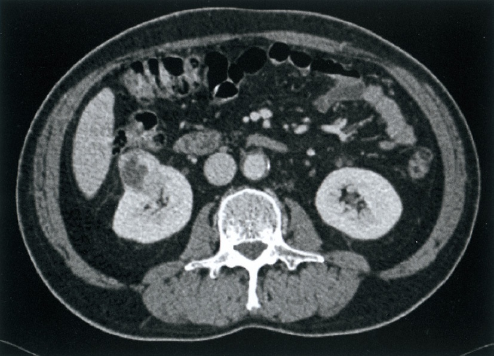
ａ 免疫療法
ｂ 放射線治療
ｃ 抗癌化学療法
ｄ 分子標的薬投与
ｅ 根治的右腎摘除術
✅
ｅ 根治的右腎摘除術
限局性腎細胞癌の根治治療は手術。選択肢に部分切除が無ければ根治的腎摘除術を選ぶ。
🔎 根治的腎摘除術と腎部分切除術——どこまで取るか
根治的腎摘除術（radical nephrectomy）は、Gerota筋膜の外側で腎・腎周囲脂肪組織・所属リンパ節を一塊に摘出する術式である。かつては副腎も同時に切除していたが、上極の巨大腫瘍や画像で副腎浸潤を疑う場合を除き、現在は温存する。腹腔鏡下・ロボット支援下で行われることが多い。腎部分切除術（partial nephrectomy）は腫瘍と周囲の正常腎実質をわずかに含めて切除し、残った腎を縫合・止血する。腎動脈を一時遮断する時間（温阻血時間）を短く保つことが腎機能温存の鍵である。
選び方の原則は「切除できるなら残す」——T1a（4cm以下）は部分切除が標準、T1b（4〜7cm）も位置によっては部分切除、腎門部・腎盂に及ぶもの・巨大なものは全摘。単腎・両側性・慢性腎臓病・von Hippel-Lindau病では大きさによらず部分切除を優先する。
□ 選択肢の検討
| 選択肢 | 解説 |
|---|---|
| ａ 免疫療法 | サイトカイン療法・免疫チェックポイント阻害薬は転移例の治療である。転移の記載がなく手術で根治できる本例に、全身療法を選ぶ理由はない。 |
| ｂ 放射線治療 | 腎細胞癌は放射線抵抗性で、根治治療にならない。 |
| ｃ 抗癌化学療法 | 腎細胞癌は化学療法抵抗性。P糖蛋白の高発現により殺細胞性薬は効かない。 |
| ｄ 分子標的薬投与 | 分子標的薬は転移性・切除不能例の薬である。限局癌に対して手術の代わりに用いる根拠はなく、術前・術後の標準投与でもない。 |
| ◯ ｅ 根治的右腎摘除術 | ◯ 限局性腎細胞癌に対する根治治療は手術のみである。腎周囲脂肪組織とGerota筋膜ごと腎を一塊に摘出するのが根治的腎摘除術で、選択肢の中で唯一「切る」手段であるこれが正解になる。（3cm・T1a なので実地では腎部分切除術が第一選択だが、本問には部分切除の選択肢が無いため、「薬・放射線か、手術か」の二択と読むのが正しい解き方である。腫瘍の位置が腎門部に近ければ実際に全摘となる。） |
📌 選択肢に「正解の術式」が無いときの読み方
本問は3cm＝T1a なので教科書的には腎部分切除術だが、選択肢は免疫療法・放射線・化学療法・分子標的薬・根治的腎摘除術の5つで、部分切除は含まれていない。| 読み方 | 手順 |
|---|---|
| ①まず疾患を確定する | 造影CTで濃染する腎の充実性腫瘤＝腎細胞癌 |
| ②治療の大枠を決める | 転移の記載なし ⇒ 手術（根治治療） |
| ③選択肢の中で大枠に合うものを選ぶ | 「切る」のは根治的腎摘除術だけ |
🎯 国試ポイント
①限局性腎細胞癌の根治治療は手術のみ。薬・放射線は根治にならない。②部分切除が選択肢にあれば4cm以下では部分切除、無ければ根治的腎摘除術。
③根治的腎摘除術はGerota筋膜ごと一塊に摘出。副腎は原則温存。
④部分切除では温阻血時間を短く保つことが腎機能温存の鍵。
⑤単腎・両側性・CKD・VHL病では大きさによらず腎温存を優先。
Q.61(109E-60)📷78%
【連問 NO.61・62・63 共通の症例文】
63 歳の女性。腹部膨隆と尿失禁とを主訴に来院した。
現病歴：2 年前から腹部膨満感を認めるようになった。次第に腹部膨隆が目立つようになり、食欲はあるが食事をとるのがつらく、時々尿失禁を認めるようになったため受診した。
既往歴：30 歳時に子宮内膜症。
生活歴：幼少期に両親が離婚して母親と2 人で暮らしていたが、母親が死亡したため3 年前からは一人暮らし。
家族歴：父親は詳細不明。母親が肺炎のため85 歳で死亡。
現 症：意識は清明。身長157cm、体重55kg。体温36.5℃。脈拍84/ 分、整。血圧166/90mmHg。呼吸数18/ 分。SpO2 98％（room air）。眼瞼結膜と眼球結膜とに異常を認めない。頸静脈の怒張を認めない。甲状腺腫と頸部リンパ節とを触知しない。心音と呼吸音とに異常を認めない。腹部は著明に膨隆し、腫大した肝と腫瘤とを腹部全体に触知する。腸雑音に異常を認めない。四肢に異常を認めない。
検査所見：尿所見：蛋白（－）、糖（－）、ケトン体1 ＋、潜血1 ＋、沈渣に白血球を認めない。血液所見：赤血球406 万、Hb 12.3g/dL、Ht 41％、白血球6,130、血小板22 万。血液生化学所見：総蛋白7.8g/dL、アルブミン4.5g/dL、総ビリルビン0.4mg/dL、AST 18IU/L、ALT 9IU/L、LD 157IU/L（基準176 〜353）、ALP 288IU/L（基準115 〜359）、γ-GTP 44IU/L（基準8 〜50）、アミラーゼ95IU/L（基準37 〜160）、尿素窒素24mg/dL、クレアチニン1.2mg/dL、尿酸6.3mg/dL、血糖98mg/dL、総コレステロール195mg/dL、トリグリセリド152mg/dL、Na 140mEq/L、K 3.9mEq/L、Cl 103mEq/L。腹部単純CT の冠状断像を示す。
今後経過中に出現すると考えられる症候として可能性が最も高いのはどれか。
63 歳の女性。腹部膨隆と尿失禁とを主訴に来院した。
現病歴：2 年前から腹部膨満感を認めるようになった。次第に腹部膨隆が目立つようになり、食欲はあるが食事をとるのがつらく、時々尿失禁を認めるようになったため受診した。
既往歴：30 歳時に子宮内膜症。
生活歴：幼少期に両親が離婚して母親と2 人で暮らしていたが、母親が死亡したため3 年前からは一人暮らし。
家族歴：父親は詳細不明。母親が肺炎のため85 歳で死亡。
現 症：意識は清明。身長157cm、体重55kg。体温36.5℃。脈拍84/ 分、整。血圧166/90mmHg。呼吸数18/ 分。SpO2 98％（room air）。眼瞼結膜と眼球結膜とに異常を認めない。頸静脈の怒張を認めない。甲状腺腫と頸部リンパ節とを触知しない。心音と呼吸音とに異常を認めない。腹部は著明に膨隆し、腫大した肝と腫瘤とを腹部全体に触知する。腸雑音に異常を認めない。四肢に異常を認めない。
検査所見：尿所見：蛋白（－）、糖（－）、ケトン体1 ＋、潜血1 ＋、沈渣に白血球を認めない。血液所見：赤血球406 万、Hb 12.3g/dL、Ht 41％、白血球6,130、血小板22 万。血液生化学所見：総蛋白7.8g/dL、アルブミン4.5g/dL、総ビリルビン0.4mg/dL、AST 18IU/L、ALT 9IU/L、LD 157IU/L（基準176 〜353）、ALP 288IU/L（基準115 〜359）、γ-GTP 44IU/L（基準8 〜50）、アミラーゼ95IU/L（基準37 〜160）、尿素窒素24mg/dL、クレアチニン1.2mg/dL、尿酸6.3mg/dL、血糖98mg/dL、総コレステロール195mg/dL、トリグリセリド152mg/dL、Na 140mEq/L、K 3.9mEq/L、Cl 103mEq/L。腹部単純CT の冠状断像を示す。
今後経過中に出現すると考えられる症候として可能性が最も高いのはどれか。
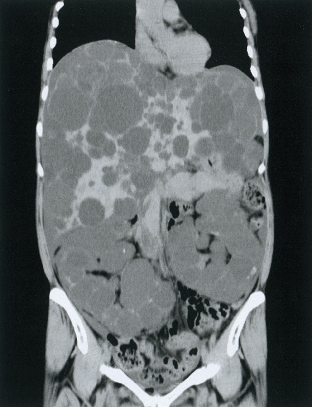
ａ 浮 腫
ｂ めまい
ｃ けいれん
ｄ 顔貌の異常
ｅ 皮膚の色素異常
✅
ａ 浮 腫
多発性囊胞腎は進行性腎不全を来す。今後最も出やすい症候は体液貯留による浮腫。
🔎 CTの読みと診断——「腹部全体の腫瘤」と「腫大した肝」
本例の身体所見は腹部が著明に膨隆し、腫大した肝と腫瘤を腹部全体に触知である。腹部単純CTの冠状断で、両腎が無数の囊胞で置き換わって巨大化し、肝にも同様の囊胞が多発している——常染色体顕性（優性）多発性囊胞腎（ADPKD）＋多発肝囊胞である。支持する所見を並べると：①高血圧（166/90mmHg・腎機能低下より先行する）、②Cr 1.2mg/dLの腎障害、③潜血1＋（囊胞出血）、④腫大した腎が膀胱を圧排して尿失禁、⑤肝の腫大にもかかわらずAST18・ALT9・ALP288・T-Bil 0.4と肝機能は正常。
この⑤が本疾患の重要な特徴——肝囊胞は「場所を取る」だけで肝細胞を壊さないので、どれだけ大きくなっても肝機能は保たれ、肝硬変にはならない。NO.67 の誤り肢「肝硬変」はここを突いている。
□ 選択肢の検討
| 選択肢 | 解説 |
|---|---|
| ◯ ａ 浮 腫 | ◯ 多発性囊胞腎は40〜60歳代で末期腎不全に至る。本例はすでにクレアチニン1.2mg/dL・血圧166/90mmHgと腎障害と高血圧が現れており、今後さらに腎機能が低下すればNa・水の排泄が追いつかず体液が貯留して浮腫を来す。腎不全の進行を最もよく表す身体所見が浮腫であり、本設問は「この疾患の自然歴を知っているか」を問うている。 |
| ｂ めまい | 前庭系・小脳・循環動態の異常による症候で、多発性囊胞腎の自然歴には含まれない。脳動脈瘤は破裂するまで無症状で、破裂すれば「めまい」ではなく突然の激しい頭痛（クモ膜下出血）として発症する。 |
| ｃ けいれん | 尿毒症が極度に進行すれば痙攣も起こりうるが、それは透析導入をはるかに越えた末期の症候であり、「今後経過中に出現する可能性が最も高い」ものではない。浮腫のほうがはるかに早く、確実に現れる。 |
| ｄ 顔貌の異常 | 特徴的な顔貌を来す疾患は末端肥大症・Cushing症候群・粘液水腫・Down症候群などで、多発性囊胞腎に特有の顔貌はない。（Potter顔貌は羊水過少による圧迫変形で、常染色体潜性型＝ARPKDの新生児にみられるもので、成人発症の本症とは無関係。） |
| ｅ 皮膚の色素異常 | 色素沈着はAddison病・ヘモクロマトーシス、色素脱失は白斑・結節性硬化症（葉状白斑）などでみられる。多発性囊胞腎に皮膚病変はない——皮膚の結節性病変を伴う囊胞性腎疾患は結節性硬化症（血管筋脂肪腫）であり、別の疾患である。 |
📌 ADPKDの自然歴——いつ何が起こるか
| 時期 | 起こること | 臨床 |
|---|---|---|
| 小児〜若年 | 囊胞は既にあるが小さい | 無症状。健診で偶然発見 |
| 20〜30歳代 | RAA系が活性化 | 高血圧が腎機能低下より先に出る |
| 30〜40歳代 | 囊胞の増大・腎腫大 | 側腹部痛・肉眼的血尿（囊胞出血）・尿路結石・囊胞感染 |
| 40〜60歳代 | ネフロンの荒廃 | 腎機能低下 ⇒ 浮腫・貧血・高K血症 ⇒ 末期腎不全（透析） |
| 全期間 | 脳動脈瘤 | 破裂すればクモ膜下出血。突然死の原因 |
| 全期間 | 肝囊胞・心弁膜症・結腸憩室 | 肝機能は保たれる |
🎯 国試ポイント
①ADPKDは40〜60歳代で末期腎不全。透析導入原因の上位。②腎機能低下の進行を表す身体所見は浮腫。
③肝囊胞があっても肝機能は正常——肝硬変にはならない。
④高血圧は腎機能低下より先に出る（本例166/90mmHg）。
⑤腫大した腎・肝が膀胱や消化管を圧排し、尿失禁・腹部膨満・食思不振を来す。
Q.62(109E-61)📷81%
【連問 NO.61・62・63 共通の症例文】
63 歳の女性。腹部膨隆と尿失禁とを主訴に来院した。
現病歴：2 年前から腹部膨満感を認めるようになった。次第に腹部膨隆が目立つようになり、食欲はあるが食事をとるのがつらく、時々尿失禁を認めるようになったため受診した。
既往歴：30 歳時に子宮内膜症。
生活歴：幼少期に両親が離婚して母親と2 人で暮らしていたが、母親が死亡したため3 年前からは一人暮らし。
家族歴：父親は詳細不明。母親が肺炎のため85 歳で死亡。
現 症：意識は清明。身長157cm、体重55kg。体温36.5℃。脈拍84/ 分、整。血圧166/90mmHg。呼吸数18/ 分。SpO2 98％（room air）。眼瞼結膜と眼球結膜とに異常を認めない。頸静脈の怒張を認めない。甲状腺腫と頸部リンパ節とを触知しない。心音と呼吸音とに異常を認めない。腹部は著明に膨隆し、腫大した肝と腫瘤とを腹部全体に触知する。腸雑音に異常を認めない。四肢に異常を認めない。
検査所見：尿所見：蛋白（－）、糖（－）、ケトン体1 ＋、潜血1 ＋、沈渣に白血球を認めない。血液所見：赤血球406 万、Hb 12.3g/dL、Ht 41％、白血球6,130、血小板22 万。血液生化学所見：総蛋白7.8g/dL、アルブミン4.5g/dL、総ビリルビン0.4mg/dL、AST 18IU/L、ALT 9IU/L、LD 157IU/L（基準176 〜353）、ALP 288IU/L（基準115 〜359）、γ-GTP 44IU/L（基準8 〜50）、アミラーゼ95IU/L（基準37 〜160）、尿素窒素24mg/dL、クレアチニン1.2mg/dL、尿酸6.3mg/dL、血糖98mg/dL、総コレステロール195mg/dL、トリグリセリド152mg/dL、Na 140mEq/L、K 3.9mEq/L、Cl 103mEq/L。腹部単純CT の冠状断像を示す。
この時点での対応として適切でないのはどれか。
63 歳の女性。腹部膨隆と尿失禁とを主訴に来院した。
現病歴：2 年前から腹部膨満感を認めるようになった。次第に腹部膨隆が目立つようになり、食欲はあるが食事をとるのがつらく、時々尿失禁を認めるようになったため受診した。
既往歴：30 歳時に子宮内膜症。
生活歴：幼少期に両親が離婚して母親と2 人で暮らしていたが、母親が死亡したため3 年前からは一人暮らし。
家族歴：父親は詳細不明。母親が肺炎のため85 歳で死亡。
現 症：意識は清明。身長157cm、体重55kg。体温36.5℃。脈拍84/ 分、整。血圧166/90mmHg。呼吸数18/ 分。SpO2 98％（room air）。眼瞼結膜と眼球結膜とに異常を認めない。頸静脈の怒張を認めない。甲状腺腫と頸部リンパ節とを触知しない。心音と呼吸音とに異常を認めない。腹部は著明に膨隆し、腫大した肝と腫瘤とを腹部全体に触知する。腸雑音に異常を認めない。四肢に異常を認めない。
検査所見：尿所見：蛋白（－）、糖（－）、ケトン体1 ＋、潜血1 ＋、沈渣に白血球を認めない。血液所見：赤血球406 万、Hb 12.3g/dL、Ht 41％、白血球6,130、血小板22 万。血液生化学所見：総蛋白7.8g/dL、アルブミン4.5g/dL、総ビリルビン0.4mg/dL、AST 18IU/L、ALT 9IU/L、LD 157IU/L（基準176 〜353）、ALP 288IU/L（基準115 〜359）、γ-GTP 44IU/L（基準8 〜50）、アミラーゼ95IU/L（基準37 〜160）、尿素窒素24mg/dL、クレアチニン1.2mg/dL、尿酸6.3mg/dL、血糖98mg/dL、総コレステロール195mg/dL、トリグリセリド152mg/dL、Na 140mEq/L、K 3.9mEq/L、Cl 103mEq/L。腹部単純CT の冠状断像を示す。
この時点での対応として適切でないのはどれか。

ａ 減 塩
ｂ 降圧薬投与
ｃ 利尿薬投与
ｄ 肝囊胞穿刺
ｅ 肝動脈塞栓術
✅
ｅ 肝動脈塞栓術
減塩・降圧・利尿・囊胞穿刺は妥当。肝動脈塞栓術は難治例に限る侵襲的治療で、この時点では選ばない。
🔎 多発肝囊胞症——「肝機能は正常、問題は容積」
ADPKDに伴う肝囊胞は最も頻度の高い腎外病変で、胆管の発生異常に由来する囊胞が加齢とともに増大する。女性・経産婦・エストロゲン製剤使用者で高度になりやすいのが特徴で、本例が63歳女性であることとも合う。肝細胞そのものは障害されないので、どれほど腫大しても肝機能検査（AST・ALT・ビリルビン・アルブミン）は正常——本例もAST 18・ALT 9・T-Bil 0.4・Alb 4.5g/dLと完全に保たれている。問題になるのは「容積」だけで、腹部膨満・早期満腹感・体重減少・呼吸苦・下大静脈や胆管の圧迫を来す。
だから治療は「症状のある囊胞を小さくする」ことに尽きる——①保存的（経過観察・エストロゲン回避）、②経皮的穿刺吸引＋硬化療法（単発の巨大囊胞に有効）、③開窓術・肝切除、④肝動脈塞栓術、⑤肝移植（最重症）という階段を、侵襲の小さい順に上っていく。
□ 選択肢の検討
| 選択肢 | 解説 |
|---|---|
| ａ 減 塩 | 適切。血圧166/90mmHg と高血圧があり、腎機能も低下し始めている。減塩（6g/日未満）は降圧と体液管理の基本で、さらにADPKDでは塩分制限が囊胞増大の抑制にも寄与すると考えられている。 |
| ｂ 降圧薬投与 | 適切。ADPKDの管理で最も重要な介入が厳格な降圧である。RAA系が亢進しているのでACE阻害薬・ARBが第一選択で、腎機能低下の進行・心血管イベント・脳動脈瘤破裂のいずれも抑える。 |
| ｃ 利尿薬投与 | 適切。体液貯留を伴う高血圧・浮腫に対する標準的な対応である。腎機能低下時にはサイアザイドよりループ利尿薬が用いられる。本例は腹部膨隆に体液貯留が関与しうる状況であり、選択して誤りではない。 |
| ｄ 肝囊胞穿刺 | 適切。巨大な肝囊胞による腹部膨満・圧迫症状に対しては、経皮的な穿刺吸引＋硬化療法（エタノール等）が確立した対症療法である。本例は腹部膨隆で「食事をとるのがつらい」という圧迫症状があり、症状の強い囊胞を狙って穿刺する意義がある。 |
| ◯ ｅ 肝動脈塞栓術 | ◯ これが適切でない。肝動脈塞栓術（TAE）は多発肝囊胞に対する治療として存在はするが、肝実質を養う血流を遮断する侵襲的処置で、発熱・疼痛・肝機能障害・肝膿瘍といった合併症を伴う。適応は「保存的治療と穿刺・硬化療法で制御できない、びまん性に肝全体を占める難治例」に限られ、専門施設での判断を要する。まだ減塩も降圧も囊胞穿刺も試していない「この時点」で選ぶ手ではない——侵襲の小さい手段から順に上げるという治療の階段を問う設問である。 |
📌 「この時点での対応」を問う設問の解き方
治療は常に「侵襲の小さいもの・可逆的なもの・原因に近いもの」から始める。この階段のどこに患者がいるかを見極めるのが、「この時点で適切でないのはどれか」型の設問の解き方である。| 段 | 手段 | 本例での位置づけ |
|---|---|---|
| 1 | 生活指導（減塩・飲水・禁煙） | まだ行っていない。当然行う |
| 2 | 薬物（降圧薬・利尿薬） | 高血圧166/90mmHg に対して必要 |
| 3 | 低侵襲手技（囊胞穿刺・硬化療法） | 圧迫症状があるので妥当 |
| 4 | 侵襲的治療（肝動脈塞栓術・開窓術・肝切除） | 段1〜3が効かない難治例に限る ⇒ 本問の答え |
| 5 | 移植（肝移植・腎移植） | 最重症・末期 |
🎯 国試ポイント
①ADPKDの肝囊胞は肝機能を落とさない。問題は容積による圧迫症状。②治療は侵襲の小さい順に：生活指導 ⇒ 薬物 ⇒ 穿刺・硬化療法 ⇒ 塞栓・切除 ⇒ 移植。
③降圧の第一選択はACE阻害薬・ARB（RAA系が亢進しているため）。
④エストロゲンは肝囊胞を増大させるので女性ではホルモン製剤を避ける。
⑤「この時点での対応として適切でない」＝正しいが順番が早すぎる手を探す。
Q.63(109E-62)📷84%
【連問 NO.61・62・63 共通の症例文】
63 歳の女性。腹部膨隆と尿失禁とを主訴に来院した。
現病歴：2 年前から腹部膨満感を認めるようになった。次第に腹部膨隆が目立つようになり、食欲はあるが食事をとるのがつらく、時々尿失禁を認めるようになったため受診した。
既往歴：30 歳時に子宮内膜症。
生活歴：幼少期に両親が離婚して母親と2 人で暮らしていたが、母親が死亡したため3 年前からは一人暮らし。
家族歴：父親は詳細不明。母親が肺炎のため85 歳で死亡。
現 症：意識は清明。身長157cm、体重55kg。体温36.5℃。脈拍84/ 分、整。血圧166/90mmHg。呼吸数18/ 分。SpO2 98％（room air）。眼瞼結膜と眼球結膜とに異常を認めない。頸静脈の怒張を認めない。甲状腺腫と頸部リンパ節とを触知しない。心音と呼吸音とに異常を認めない。腹部は著明に膨隆し、腫大した肝と腫瘤とを腹部全体に触知する。腸雑音に異常を認めない。四肢に異常を認めない。
検査所見：尿所見：蛋白（－）、糖（－）、ケトン体1 ＋、潜血1 ＋、沈渣に白血球を認めない。血液所見：赤血球406 万、Hb 12.3g/dL、Ht 41％、白血球6,130、血小板22 万。血液生化学所見：総蛋白7.8g/dL、アルブミン4.5g/dL、総ビリルビン0.4mg/dL、AST 18IU/L、ALT 9IU/L、LD 157IU/L（基準176 〜353）、ALP 288IU/L（基準115 〜359）、γ-GTP 44IU/L（基準8 〜50）、アミラーゼ95IU/L（基準37 〜160）、尿素窒素24mg/dL、クレアチニン1.2mg/dL、尿酸6.3mg/dL、血糖98mg/dL、総コレステロール195mg/dL、トリグリセリド152mg/dL、Na 140mEq/L、K 3.9mEq/L、Cl 103mEq/L。腹部単純CT の冠状断像を示す。
3 か月後に発熱と腰背部痛とに加えて尿量が減少したため再度来院した。左腰背部に叩打痛を認め腎囊胞の感染を疑った。
正しいのはどれか。
63 歳の女性。腹部膨隆と尿失禁とを主訴に来院した。
現病歴：2 年前から腹部膨満感を認めるようになった。次第に腹部膨隆が目立つようになり、食欲はあるが食事をとるのがつらく、時々尿失禁を認めるようになったため受診した。
既往歴：30 歳時に子宮内膜症。
生活歴：幼少期に両親が離婚して母親と2 人で暮らしていたが、母親が死亡したため3 年前からは一人暮らし。
家族歴：父親は詳細不明。母親が肺炎のため85 歳で死亡。
現 症：意識は清明。身長157cm、体重55kg。体温36.5℃。脈拍84/ 分、整。血圧166/90mmHg。呼吸数18/ 分。SpO2 98％（room air）。眼瞼結膜と眼球結膜とに異常を認めない。頸静脈の怒張を認めない。甲状腺腫と頸部リンパ節とを触知しない。心音と呼吸音とに異常を認めない。腹部は著明に膨隆し、腫大した肝と腫瘤とを腹部全体に触知する。腸雑音に異常を認めない。四肢に異常を認めない。
検査所見：尿所見：蛋白（－）、糖（－）、ケトン体1 ＋、潜血1 ＋、沈渣に白血球を認めない。血液所見：赤血球406 万、Hb 12.3g/dL、Ht 41％、白血球6,130、血小板22 万。血液生化学所見：総蛋白7.8g/dL、アルブミン4.5g/dL、総ビリルビン0.4mg/dL、AST 18IU/L、ALT 9IU/L、LD 157IU/L（基準176 〜353）、ALP 288IU/L（基準115 〜359）、γ-GTP 44IU/L（基準8 〜50）、アミラーゼ95IU/L（基準37 〜160）、尿素窒素24mg/dL、クレアチニン1.2mg/dL、尿酸6.3mg/dL、血糖98mg/dL、総コレステロール195mg/dL、トリグリセリド152mg/dL、Na 140mEq/L、K 3.9mEq/L、Cl 103mEq/L。腹部単純CT の冠状断像を示す。
3 か月後に発熱と腰背部痛とに加えて尿量が減少したため再度来院した。左腰背部に叩打痛を認め腎囊胞の感染を疑った。
正しいのはどれか。

ａ 尿培養検査が高率に陽性となる。
ｂ Gram 陰性菌が原因である可能性が高い。
ｃ MRI は囊胞感染の診断に特異度が高い。
ｄ 感染囊胞ドレナージは有用性が低い。
ｅ 腎摘出術は禁忌である。
✅
ｂ Gram 陰性菌が原因である可能性が高い。
腎囊胞感染の起因菌はGram陰性桿菌（大腸菌）。尿培養は陰性が多く、脂溶性抗菌薬とドレナージで治療する。
🔎 腎囊胞感染——「閉じた空間の感染」として考える
ADPKDの囊胞は発生の途中で尿細管との交通を失い、閉じた袋になっている。この構造がそのまま臨床像を決める。①尿と交通しない ⇒ 膿尿・細菌尿が出ず、尿培養は陰性のことが多い。発熱・限局した腰背部痛・叩打痛・CRP上昇があるのに尿所見が乏しいという食い違いが診断の手がかりになる（血液培養は陽性率が高い）。
②抗菌薬が入りにくい ⇒ 囊胞壁を通れる脂溶性の薬を選ぶ。ニューキノロン系（レボフロキサシン等）・ST合剤・クロラムフェニコールが囊胞内移行性に優れ、β-ラクタム系（ペニシリン・セフェム）は水溶性で移行が悪い。
③薬で治らなければ出す ⇒ 経皮的ドレナージ、それでも駄目なら腎摘出。「閉じた空間の感染は、薬・ドレナージ・切除の順」——膿瘍一般と同じ原則がそのまま当てはまる。
□ 選択肢の検討
| 選択肢 | 解説 |
|---|---|
| ａ 尿培養検査が高率に陽性となる。 | 多くの囊胞は尿路と交通を失っているため、感染した囊胞の中身が尿へ出てこず、尿培養は陰性のことが多い。「発熱・腰背部痛があるのに尿所見が乏しい」のが囊胞感染の特徴で、診断を難しくしている原因でもある。血液培養のほうが陽性率が高い。 |
| ◯ ｂ Gram 陰性菌が原因である可能性が高い。 | ◯ 感染経路は主に腸内細菌の上行性感染で、大腸菌（Escherichia coli）をはじめとするGram陰性桿菌が最多である。Klebsiella・Proteus・Enterococcus なども原因となる。治療上の意味は大きく、囊胞壁を通過して囊胞内に到達する脂溶性抗菌薬（ニューキノロン系・ST合剤）が第一選択となる。β-ラクタム系は水溶性で囊胞内へ移行しにくく効きにくい——「Gram陰性菌」という起因菌の想定と「囊胞内移行性」の2つで薬を決める。 |
| ｃ MRI は囊胞感染の診断に特異度が高い。 | 囊胞感染はCTでもMRIでも確定できないことが多い。囊胞内出血との区別がつきにくく、無数の囊胞のどれが感染巣かを特定するのが難しいためである。画像で最も有用とされるのはFDG-PETで、感染囊胞に一致した集積が得られる。 |
| ｄ 感染囊胞ドレナージは有用性が低い。 | 抗菌薬で解熱しない例では、感染囊胞の経皮的ドレナージが有効である。膿瘍と同じで「膿は出す」のが原則——囊胞は閉じた空間なので薬だけでは治りにくく、ドレナージによって解熱し、起因菌も同定できる。 |
| ｅ 腎摘出術は禁忌である。 | 抗菌薬とドレナージでも制御できない難治性・反復性の囊胞感染では、感染源として腎摘出術が選択されることがある。禁忌ではなく最終手段である。（すでに透析に至っている患者では、腎を摘出しても失うものが少ないので選びやすい。） |
📌 ADPKDで起こる「腰背部痛＋発熱」の鑑別
| 病態 | 特徴 | 対応 |
|---|---|---|
| 囊胞感染 | 発熱・限局した圧痛と叩打痛・CRP上昇。尿培養は陰性が多い | 脂溶性抗菌薬（キノロン・ST合剤）。無効ならドレナージ |
| 囊胞出血 | 突然の側腹部痛・肉眼的血尿。発熱は無いか軽度 | 安静・補液・鎮痛。多くは自然止血 |
| 尿路結石 | 疝痛・血尿。ADPKDでは尿酸結石が多い | 補液・鎮痛・排石促進 |
| 腎盂腎炎 | 発熱・膿尿・細菌尿（尿培養陽性） | 通常の抗菌薬 |
| 腎細胞癌 | まれ。増大する充実性病変 | 造影CT・MRI |
🎯 国試ポイント
①腎囊胞感染の起因菌はGram陰性桿菌（大腸菌が最多）。上行性感染。②尿培養は陰性のことが多い——囊胞が尿路と交通しないため。血液培養が有用。
③抗菌薬は囊胞内移行性のよい脂溶性薬（ニューキノロン・ST合剤）。β-ラクタムは効きにくい。
④無効ならドレナージ、難治なら腎摘出術（禁忌ではない）。
⑤CT・MRIでは囊胞出血と区別しにくい。FDG-PETが有用。
Q.64(107A-42)📷97%
50 歳の女性。腹部膨満感を主訴に来院した。3 年前に高血圧を指摘されたが降圧薬は内服していない。母親が慢性腎不全で60 歳から血液透析を受け、65 歳時にくも膜下出血で死亡している。腹部触診で両側の腹部に凹凸のある腫瘤を触れるが圧痛はない。腸蠕動音は弱い。体温36.5℃。血圧162/90mmHg。尿所見：蛋白（－）、糖（－）、潜血（±）。血液所見：赤血球382 万、Hb 10.2g/dl、Ht 32％、白血球5,600、血小板28 万。血液生化学所見：アルブミン3.8g/dl、尿素窒素22mg/dl、クレアチニン1.2mg/dl。CRP 0.2mg/dl。腹部単純CT を示す。
この患者で検索すべきなのはどれか。
この患者で検索すべきなのはどれか。
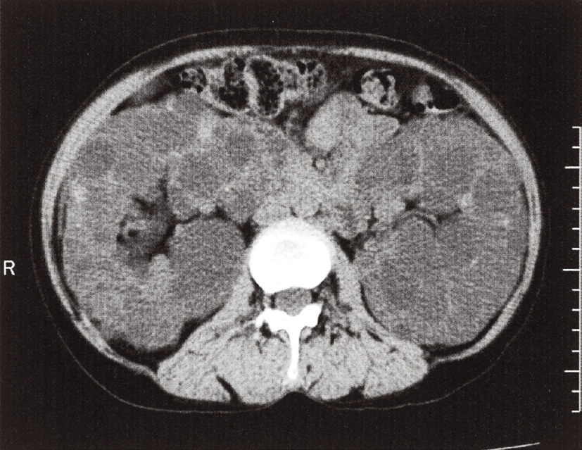
ａ 肝細胞癌
ｂ 大腸ポリープ
ｃ 尿管癌
ｄ 脳動脈瘤
ｅ 肥大型心筋症
✅
ｄ 脳動脈瘤
ADPKD＋くも膜下出血の家族歴。検索すべきは脳動脈瘤（頭部MRA）。
🔎 ADPKDと脳動脈瘤——なぜ動脈瘤ができるのか
ポリシスチン1／2は腎の尿細管上皮だけでなく、血管平滑筋細胞・血管内皮細胞にも発現している。これらが機能しないと血管壁の細胞外基質が脆弱になり、血流の応力がかかる分岐部で内弾性板が破綻して囊状動脈瘤が形成される。ADPKDが「腎の病気」ではなく「全身の管腔構造の病気」であることの最もはっきりした現れがこれで、心臓弁膜（僧帽弁逸脱）・結腸憩室・鼠径ヘルニア・大動脈解離も同じ理屈で起こる。さらに高血圧が加わることで破裂リスクが跳ね上がる——ADPKDでは高血圧が若年から必発なので、動脈瘤と高血圧の二重の負荷がかかる。
スクリーニングの考え方：全例に行うか家族歴のある例に絞るかは議論があるが、「脳動脈瘤・クモ膜下出血の家族歴がある」「本人が高血圧」「危険な職業・手術予定」といった条件があれば実施が推奨される。本例は家族歴と高血圧の両方を満たす。
□ 選択肢の検討
| 選択肢 | 解説 |
|---|---|
| ａ 肝細胞癌 | ADPKDには肝囊胞が高率に合併するが、肝実質は保たれ、肝硬変にも肝細胞癌にも至らない。肝細胞癌の背景となるのはB型・C型肝炎ウイルス、アルコール、脂肪肝炎による慢性肝障害であり、囊胞ではない。 |
| ｂ 大腸ポリープ | ADPKDに合併しやすい腸管病変は結腸憩室であって、ポリープではない。いずれにせよ無症状の段階で優先して探すべき合併症ではない。 |
| ｃ 尿管癌 | 尿路上皮癌のリスクを高めるのは喫煙・化学物質（芳香族アミン）・フェナセチン乱用・バルカン腎症・長期のシクロホスファミドなどで、多発性囊胞腎は尿路上皮癌の危険因子ではない。 |
| ◯ ｄ 脳動脈瘤 | ◯ ADPKDの脳動脈瘤合併率は5〜10％で一般人口の約4倍、さらに本例は母親が「くも膜下出血で死亡」という家族歴を持つ。脳動脈瘤の家族歴がある例では合併率がさらに上がり、破裂すれば致死率の高いクモ膜下出血となる。未破裂のうちに見つければ、厳格な降圧・禁煙、大きさや部位によっては予防的なクリッピング・コイル塞栓で破裂を防げる——だから「検索すべき」なのである。検査は非侵襲的な頭部MRA。 |
| ｅ 肥大型心筋症 | ADPKDに合併しやすい心病変は僧帽弁逸脱などの弁膜症で、肥大型心筋症ではない。肥大型心筋症はサルコメア蛋白遺伝子変異による独立した疾患である。（高血圧の持続による左室肥大は起こりうるが、それは「肥大型心筋症」とは別のものである。） |
📌 「家族歴」が診断を決める型の問題
本章ではNO.46・57・58・64・69 の5問で家族歴が決定的な役割を果たす。| 問題 | 家族歴 | 読み取ること |
|---|---|---|
| NO.46 | 父が透析＋クモ膜下出血で突然死 | ADPKD＋脳動脈瘤 ⇒ 頭部MRA |
| NO.57 | 母・母方祖父が透析、祖父は脳出血 | 常染色体顕性遺伝 ⇒ 子は男女とも50％ |
| NO.58 | 母が透析中 | ADPKD ⇒ 頭部MRA |
| NO.64 | 母が透析＋くも膜下出血で死亡 | ADPKD＋脳動脈瘤 ⇒ 検索すべきは脳動脈瘤 |
| NO.69 | 家族内に同様のCT所見 | 常染色体顕性遺伝の裏づけ |
🎯 国試ポイント
①ADPKD＋家族性のクモ膜下出血 ⇒ 脳動脈瘤を頭部MRAで探す。②合併率5〜10％（一般の約4倍）。家族歴があるとさらに高い。
③肝は囊胞のみで肝硬変・肝細胞癌にはならない。
④腸管は結腸憩室、心は僧帽弁逸脱——ポリープ・肥大型心筋症ではない。
⑤未破裂で見つければ降圧・禁煙・予防的治療で破裂を防げる。
Q.65(107I-78)📷43%
62 歳の男性。咳嗽を主訴に来院した。6 か月前に腹部造影CT で異常を認めたため右腎摘出術を受けた。術前の胸部CT では異常を認めなかった。1 か月前から時々せき込むことがあり心配になり受診した。心音と呼吸音とに異常を認めない。身長175cm、体重72kg。体温36.5℃。脈拍72/ 分、整。血圧136/82mmHg。呼吸数16/ 分。SpO2 97％（room air）。血液所見：赤血球420 万、Hb 13.4g/dl、Ht 41％、白血球7,500、血小板18 万。CRP 0.1mg/dl。胸部単純CT で両肺に複数の腫瘤陰影を認める。右腎摘出前の腹部造影CT を示す。
治療薬として適切なのはどれか。2 つ選べ。
治療薬として適切なのはどれか。2 つ選べ。
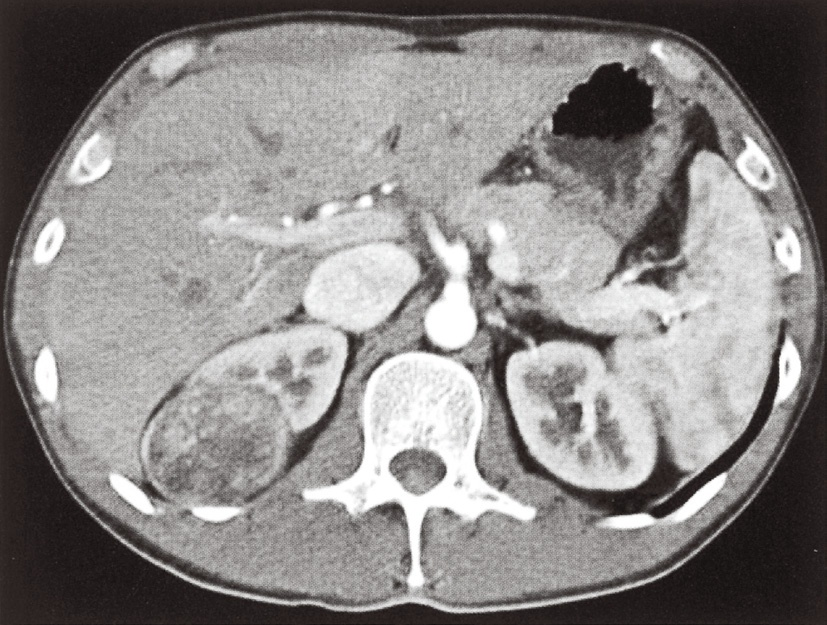
ａ 抗菌薬
ｂ 分子標的薬
ｃ シスプラチン
ｄ インターフェロン
ｅ 副腎皮質ステロイド
✅
ｂ・ｄ
腎摘後の多発肺転移。腎細胞癌の全身療法は分子標的薬とインターフェロン。シスプラチンは無効かつ腎毒性。
🔎 本章の最難問（正答率43％）——なぜ割れるのか
設問は「腎摘後6か月で両肺に複数の腫瘤陰影」＝腎細胞癌の多発肺転移という素直な状況設定である。にもかかわらず正答率が43％まで落ちるのは、「癌の治療薬を2つ選べ」と言われて、反射的にシスプラチン（＝抗癌薬の代名詞）を拾ってしまうからである。腎細胞癌の3つの「効かない」を最初に確定させる——①殺細胞性抗癌薬が効かない（P糖蛋白）、②放射線が効かない、③ホルモンが効かない。この3つを消せば、残るのは分子標的薬（VEGF系）と免疫療法（サイトカイン／ICI）だけになる。
さらに本例には「腎摘後＝単腎」という条件がある。シスプラチンは尿細管障害を起こす代表的な腎毒性薬で、残った1個の腎を失わせかねない——効かないうえに危険という二重の理由で切れる。腎機能に配慮した薬剤選択は泌尿器科全体を貫く視点である。
□ 選択肢の検討
| 選択肢 | 解説 |
|---|---|
| ａ 抗菌薬 | 感染を示唆する所見が一つもない——体温36.5℃・白血球7,500・CRP 0.1mg/dl・呼吸音正常。腎癌術後6か月で両肺に複数の腫瘤陰影が出れば、まず肺転移である。 |
| ◯ ｂ 分子標的薬 | ◯ 転移性腎細胞癌の全身療法の中核。VEGF受容体チロシンキナーゼ阻害薬（スニチニブ・パゾパニブ・アキシチニブ）やmTOR阻害薬（エベロリムス）を用いる。VHL不活化 ⇒ HIF-α蓄積 ⇒ VEGF過剰という腎細胞癌の発癌機序そのものを断つので、この癌に対して最も理にかなった薬である。 |
| ｃ シスプラチン | 腎細胞癌は化学療法抵抗性で、シスプラチンを含む殺細胞性薬は奏効しない。P糖蛋白（MDR1）を高発現して薬剤を細胞外へ汲み出すためと説明される。さらに本例は腎摘後の単腎であり、腎毒性の強いシスプラチンは最も避けたい薬である。正答率43％と本章で最も割れた問題で、票が流れる最大の受け皿がこの肢——「癌＝抗癌薬」という反射に注意する。 |
| ◯ ｄ インターフェロン | ◯ 腎細胞癌は免疫原性が高く、インターフェロンα・インターロイキン2によるサイトカイン療法が有効な数少ない固形癌である。とくに肺転移のみ・小病変・全身状態良好の症例で奏効が期待できるとされ、本例（PS良好・肺のみ・無症状に近い）は条件を満たす。（現在の一次治療の主役は免疫チェックポイント阻害薬に移ったが、「免疫で叩く」という軸は同じである。） |
| ｅ 副腎皮質ステロイド | 腎細胞癌に対する抗腫瘍効果はない。ステロイドが腫瘍そのものに効くのは悪性リンパ腫・白血病・多発性骨髄腫などの造血器腫瘍で、固形癌では制吐・食欲増進・脳転移の浮腫軽減・骨転移痛の緩和といった支持療法として使うにとどまる。 |
📌 腎細胞癌に「使う薬」と「使わない薬」
| 薬 | 理由 | |
|---|---|---|
| 使う | 分子標的薬（スニチニブ・アキシチニブ・パゾパニブ・カボザンチニブ／エベロリムス） | VHL-HIF-VEGF系を断つ。経口薬 |
| 免疫療法（インターフェロンα・IL-2／ニボルマブ・イピリムマブ・ペムブロリズマブ） | 免疫原性が高く自然退縮すらある癌 | |
| 使わない | 殺細胞性抗癌薬（シスプラチン等） | P糖蛋白で排出され無効。腎毒性 |
| ホルモン薬 | ホルモン依存性がない | |
| 副腎皮質ステロイド | 抗腫瘍効果なし。支持療法としてのみ |
🎯 国試ポイント
①転移性腎細胞癌＝分子標的薬＋免疫療法。シスプラチンは無効（本問の最大の落とし穴）。②腎摘後は単腎——腎毒性薬（シスプラチン・NSAIDs・造影剤）を避ける。
③発熱もCRP上昇も無い肺の多発腫瘤は感染ではなく転移。
④ステロイドが抗腫瘍効果を持つのは造血器腫瘍。固形癌では支持療法。
⑤腎細胞癌の転移は肺が最多。術後は長期の胸部CTフォローを行う。
Q.66(105I-44)📷90%
59 歳の男性。人間ドックで右腎の腫瘤を指摘され来院した。既往歴と家族歴とに特記すべきことはない。身長166cm、体重61kg。体温36.2℃。呼吸数12/ 分。脈拍64/ 分、整。血圧128/78mmHg。腹部は平坦、軟で、肝・脾を触知しない。尿所見：蛋白（－）、糖（－）、潜血1 ＋。血液所見：赤血球507 万、Hb 15.5g/dl、Ht 44％、白血球7,000、血小板21 万。血液生化学所見：血糖98mg/dl、総蛋白7.5g/dl、アルブミン4.3g/dl、尿素窒素17mg/dl、クレアチニン0.8mg/dl、尿酸6.8mg/dl、総ビリルビン0.8mg/dl、AST 19IU/l、ALT 16IU/l、LD 195IU/l（基準176 〜353）、ALP 249IU/l（基準115 〜359）、Na 140mEq/l、K 4.1mEq/l、Cl 105mEq/l、Ca 9.3mg/dl。CRP 0.1mg/dl。腹部超音波検査で右腎に長径5cm の占拠性病変を認める。胸腹部単純CT で腎以外に明らかな異常を認めない。骨シンチグラフィに明らかな異常を認めない。腹部造影CT を示す。
対応として適切なのはどれか。
対応として適切なのはどれか。
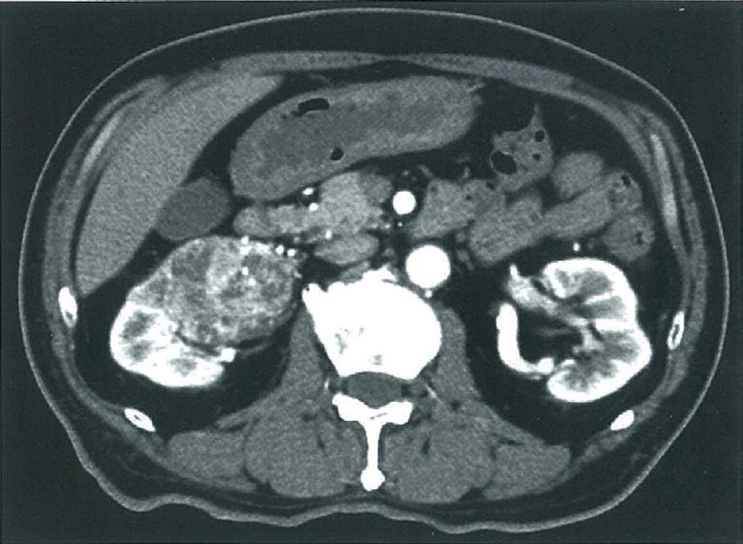
ａ 経過観察
ｂ 分子標的薬投与
ｃ 根治的右腎摘除術
ｄ 経皮的右腎動脈塞栓術
ｅ インターフェロンα投与
✅
ｃ 根治的右腎摘除術
長径5cm・転移なしの限局性腎細胞癌。選択肢に部分切除が無いので根治的腎摘除術。
🔎 病期診断——「転移が無い」をどう確認したか
腎細胞癌の治療方針は「転移があるか無いか」でまず二分されるので、病期診断の記載を読み落とさないことが解答の鍵になる。本例では①胸腹部単純CTで腎以外に異常なし（肺・肝・リンパ節）、②骨シンチグラフィで異常なし（骨転移）と、転移好発部位が明示的に否定されている。腎細胞癌の転移検索：胸部CT（肺）・腹部造影CT（肝・リンパ節・対側腎・副腎）・骨シンチや骨単純写（溶骨性骨転移）・症状があれば頭部MRI（脳）。FDG-PETは腎細胞癌では感度が高くない（FDGが尿中に排泄されるため）ことも押さえておく。
検査値も「転移が無い」ことと整合している——Ca 9.3mg/dl（高Ca血症なし）、ALP 249IU/l・LD 195IU/l（骨転移・腫瘍量の増加なし）、Hb 15.5g/dl（貧血なし）、CRP 0.1mg/dl（腫瘍熱・炎症なし）。腫瘍随伴症状（NO.54）がひとつも出ていない状態である。
□ 選択肢の検討
| 選択肢 | 解説 |
|---|---|
| ａ 経過観察 | 長径5cmの充実性腫瘤を経過観察してよい理由はない。監視療法が検討されるのは、高齢・重篤な合併症があり、かつ3cm以下の小径腫瘍という限られた場面に限る。59歳・合併症なし・腎機能正常の本例は手術で根治を狙うべきである。 |
| ｂ 分子標的薬投与 | 分子標的薬は転移性・切除不能例の薬。本例は胸腹部CT・骨シンチで転移が無いことが確認されており、手術で治せる段階で全身療法を選ぶ理由がない。 |
| ◯ ｃ 根治的右腎摘除術 | ◯ 転移のない限局性腎細胞癌に対する根治治療は手術である。長径5cm＝T1bで、選択肢に腎部分切除術が無い以上、「切る」手段である根治的腎摘除術が正解になる。Gerota筋膜ごと腎と腎周囲脂肪組織を一塊に摘出する。（実地では5cmでも位置が良ければ部分切除を選ぶが、与えられた5つの中から選ぶのが国試の作法である。NO.60 とまったく同じ構造の設問。） |
| ｄ 経皮的右腎動脈塞栓術 | 腎動脈塞栓術は根治治療ではなく、制御困難な腫瘍出血の止血や巨大腫瘍の術前処置として行う姑息的手技である。本例には出血のコントロールを要する状況がない。 |
| ｅ インターフェロンα投与 | サイトカイン療法は転移例に対する全身療法で、限局癌の根治治療にはならない。発熱・骨髄抑制・抑うつなど負担も大きい。 |
📌 腎細胞癌のTNM分類（T因子）
| T | 定義 | 治療の目安 |
|---|---|---|
| T1a | 腎に限局・4cm以下 | 腎部分切除術 |
| T1b | 腎に限局・4cm超7cm以下（本例） | 部分切除も可／根治的腎摘除術 |
| T2 | 腎に限局・7cm超 | 根治的腎摘除術 |
| T3 | 腎静脈・下大静脈へ進展、または腎周囲脂肪へ浸潤（Gerota筋膜は越えない） | 腎摘＋腫瘍塞栓摘除（NO.50） |
| T4 | Gerota筋膜を越える／同側副腎へ直接浸潤 | 集学的治療 |
🎯 国試ポイント
①転移の無い腎細胞癌は手術で根治を狙う。薬・塞栓・経過観察は選ばない。②T1a（4cm以下）は部分切除、それ以上や部分切除が選択肢に無ければ根治的腎摘除術。
③転移検索は胸部CT・腹部造影CT・骨シンチ。FDG-PETは腎細胞癌では感度が低い。
④Ca・ALP・LD・Hb・CRPは腫瘍随伴症状と転移の間接的な指標になる。
⑤腎動脈塞栓術は止血・術前処置。根治治療ではない。
Q.67(102I-12)43%
常染色体優性遺伝多発性囊胞腎症に合併するのはどれか。2 つ選べ。
ａ 高血圧
ｂ 肝硬変
ｃ 脳動脈瘤
ｄ 腎細胞癌
ｅ 褐色細胞腫
✅
ａ・ｃ
ADPKDの合併は高血圧と脳動脈瘤。肝は「囊胞」であり肝硬変ではない。腎細胞癌・褐色細胞腫はVHL病等。
🔎 「囊胞ができる遺伝性疾患」を並べて区別する
囊胞性腎疾患は複数あり、しかもどれも遺伝性なので混同しやすい。「腎以外に何が出るか」で区別するのが最短である。ADPKD：肝囊胞（肝機能正常）・脳動脈瘤・僧帽弁逸脱・結腸憩室。腎不全は40〜60歳代。
von Hippel-Lindau病：腎囊胞に加えて両側多発の腎細胞癌・小脳/脊髄/網膜の血管芽腫・褐色細胞腫・膵神経内分泌腫瘍。3p25 のVHL遺伝子（腎細胞癌と同じ遺伝子）。
結節性硬化症：両側多発の腎血管筋脂肪腫・腎囊胞に加えて顔面の血管線維腫・葉状白斑・シャグリンパッチ・上衣下巨細胞性星細胞腫・てんかん・知的障害。皮膚病変があるのがこの疾患（NO.69 の肢b の引っかけ）。
後天性囊胞腎（ACDK）：長期透析患者に生じ、腎細胞癌の発生率が高い。遺伝性ではない。
□ 選択肢の検討
| 選択肢 | 解説 |
|---|---|
| ◯ ａ 高血圧 | ◯ ADPKDで最も高頻度・最も早期に現れる合併症で、腎機能がまだ正常な20〜30歳代のうちから出る。機序は囊胞が腎内の血管を圧迫して局所の虚血を生み、レニン-アンジオテンシン-アルドステロン系が活性化することによる。厳格な降圧（ACE阻害薬・ARBを第一選択）が腎機能低下と心血管イベント、そして脳動脈瘤破裂を抑える——本症の管理の中心である。 |
| ｂ 肝硬変 | 合併するのは「肝囊胞」であって「肝硬変」ではない。囊胞は肝の中で場所を取るだけで肝細胞を破壊せず、線維化も進めないので、どれほど肝が腫大しても肝機能検査は正常である（NO.61-63 の症例がまさにそれ）。「囊胞 ⇒ 肝腫大 ⇒ 肝硬変」と連想させる引っかけで、正答率43％まで落ちた最大の受け皿がこの肢である。（先天性肝線維症により門脈圧亢進症を来すのは常染色体潜性型＝ARPKD。） |
| ◯ ｃ 脳動脈瘤 | ◯ 合併率5〜10％で一般人口の約4倍。ポリシスチンが血管平滑筋・内皮にも発現しており、その機能喪失で血管壁が脆弱になるため、分岐部に囊状動脈瘤ができる。破裂すればクモ膜下出血となり、ADPKD患者の突然死の原因になるので、頭部MRAでのスクリーニングが本章で繰り返し問われる（NO.46・58・64）。 |
| ｄ 腎細胞癌 | ADPKDそのものが腎細胞癌のリスクを明らかに高めるとはされていない。腎癌の発生率が高くなるのは「長期透析に伴う後天性囊胞腎（ACDK）」のほうで、これは別の病態である（NO.52 の肢e を参照）。若年・両側・多発の腎細胞癌が出るのはvon Hippel-Lindau病で、こちらも本症とは別。 |
| ｅ 褐色細胞腫 | 褐色細胞腫を合併するのはvon Hippel-Lindau病・多発性内分泌腫瘍症2型（MEN2）・神経線維腫症1型である。VHL病は「腎囊胞・腎細胞癌」も来すため本症と混同しやすいが、VHL病では加えて小脳・網膜の血管芽腫、膵神経内分泌腫瘍、褐色細胞腫が揃う。ADPKDに副腎の腫瘍は合併しない。 |
📌 ADPKDに「合併するもの」「しないもの」
| 項目 | 備考 | |
|---|---|---|
| 合併する | 高血圧 | 最多・最早期。RAA系亢進 |
| 脳動脈瘤 | 5〜10％。頭部MRAでスクリーニング | |
| 肝囊胞 | 最多の腎外病変。肝機能は正常 | |
| 心弁膜症（僧帽弁逸脱） | 心エコー | |
| 結腸憩室・鼠径ヘルニア | 細胞外基質の脆弱性 | |
| 合併しない | 肝硬変 | ARPKDの先天性肝線維症と混同しない |
| 腎細胞癌 | 後天性囊胞腎（透析）・VHL病の話 | |
| 褐色細胞腫 | VHL病・MEN2・NF1 | |
| 皮膚病変 | 結節性硬化症 |
🎯 国試ポイント
①ADPKDの合併＝高血圧と脳動脈瘤（＋肝囊胞・僧帽弁逸脱・結腸憩室）。②肝は「囊胞」。肝硬変・門脈圧亢進はARPKDの先天性肝線維症。
③腎細胞癌が増えるのは長期透析の後天性囊胞腎。褐色細胞腫はVHL病・MEN2。
④皮膚の結節性病変があれば結節性硬化症。
⑤高血圧は腎機能低下より先に出るので、若年の高血圧＋家族歴で本症を疑う。
Q.68(101B-58)98%
同胞に発生する頻度が高いのはどれか。
ａ 脊椎破裂
ｂ 腹壁破裂
ｃ 動脈管開存症
ｄ 多発性囊胞腎
ｅ 先天性股関節脱臼
✅
ｄ 多発性囊胞腎
多発性囊胞腎は単一遺伝子疾患（常染色体顕性）で同胞再発率50％。他は多因子遺伝で数％。
🔎 「同胞再発率」で疾患の遺伝様式を見抜く
同じ両親から生まれた次の子が同じ病気になる確率を同胞再発率という。この数字は遺伝様式によって桁が変わるので、逆に再発率から遺伝様式を推測できる。①単一遺伝子疾患（メンデル遺伝）：常染色体顕性なら50％、常染色体潜性なら25％。計算で決まる大きな数字になる。
②多因子遺伝（先天性心疾患・二分脊椎・口唇口蓋裂・幽門狭窄症・先天性股関節脱臼など）：おおむね2〜5％。一般集団より高いが、桁としては小さい。
③染色体異常（Down症候群など）：多くは散発性で再発率は1％前後（ただし均衡型転座保因者の親がいれば大きく上がる）。
選択肢の中に「メンデル遺伝する疾患」が1つだけ混じっていたら、それが答え——本問はまさにその構造である。
□ 選択肢の検討
| 選択肢 | 解説 |
|---|---|
| ａ 脊椎破裂 | 二分脊椎（脊椎破裂）は多因子遺伝＋環境因子（葉酸欠乏）による神経管閉鎖障害で、同胞再発率は数％程度である。予防は妊娠前からの葉酸摂取で、一度罹患児を出産した母では次子の妊娠時に高用量の葉酸が推奨される。 |
| ｂ 腹壁破裂 | 腹壁破裂（gastroschisis）は臍帯右側の腹壁欠損から腸管が脱出する散発性の疾患で、若年出産・喫煙などが危険因子とされるが遺伝性はほとんどない。同胞再発率は極めて低い。 |
| ｃ 動脈管開存症 | 先天性心疾患の多くは多因子遺伝で、同胞再発率は2〜5％程度である。動脈管開存症は未熟児・低出生体重児・母体の風疹感染など環境要因の寄与が大きい。 |
| ◯ ｄ 多発性囊胞腎 | ◯ 常染色体顕性（優性）遺伝＝単一遺伝子疾患なので、罹患者の子（＝患児の同胞）は男女を問わず50％の確率で罹患する。多因子遺伝の疾患が数％であるのに対し、メンデル遺伝する疾患は10〜50％と桁が違う——これが本問の答えを決める。（常染色体潜性型＝ARPKDであっても、両親が保因者なので同胞再発率は25％と依然高い。いずれの型でも「同胞に高頻度」は成り立つ。） |
| ｅ 先天性股関節脱臼 | 多因子遺伝で、女児・骨盤位分娩・不適切な下肢の巻き方（おむつ・抱き方）といった環境因子の寄与が大きい。家族内集積はあるが同胞再発率は数％にとどまる。 |
📌 同胞再発率の目安
| 疾患 | 遺伝様式 | 同胞再発率 |
|---|---|---|
| 多発性囊胞腎（ADPKD） | 常染色体顕性 | 50％ |
| 多発性囊胞腎（ARPKD） | 常染色体潜性 | 25％ |
| 二分脊椎 | 多因子 | 2〜5％（葉酸で予防） |
| 先天性心疾患（動脈管開存症など） | 多因子 | 2〜5％ |
| 先天性股関節脱臼 | 多因子 | 数％ |
| 腹壁破裂 | 散発性 | ごく低い |
| Down症候群（標準型21トリソミー） | 染色体異常（散発） | 1％前後 |
🎯 国試ポイント
①常染色体顕性＝50％、常染色体潜性＝25％、多因子＝2〜5％。桁の違いで選ぶ。②多発性囊胞腎は単一遺伝子疾患なので同胞再発率が突出して高い。
③二分脊椎は葉酸で予防できる（妊娠前から摂取）。
④Down症候群の再発率は1％前後だが、親が均衡型転座保因者なら大きく上がる。
⑤遺伝カウンセリングは非指示的に。自己決定を尊重する。
Q.69(99A-42)📷
13 歳の男子。学校検尿で微少血尿を指摘され来院した。浮腫と乏尿とには気付いていない。血圧108/62mmHg。眼瞼に浮腫を認めない。心肺に異常はない。腹部は平坦で、肝・脾を触知しない。尿所見：蛋白（－）、糖（－）、沈渣に赤血球5 〜10/1 視野。血液所見：赤血球424 万、Hb 12.4g/dl、白血球8,200。血液生化学所見：尿素窒素15mg/dl、クレアチニン0.6mg/dl、Na 142mEq/l、K 4.4mEq/l、Cl 104mEq/l。腹部造影CT を示す。家族内に同様のCT 所見を示す者がいる。
この疾患について正しいのはどれか。
この疾患について正しいのはどれか。
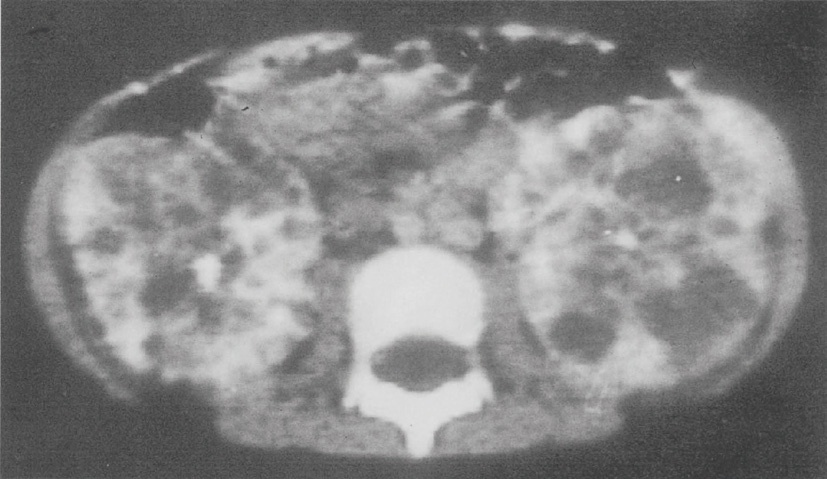
ａ 常染色体劣性遺伝である。
ｂ 皮膚に結節性病変がみられる。
ｃ 肝に同様の病変がみられる。
ｄ 難聴の合併が多い。
ｅ 予後は良好である。
✅
ｃ 肝に同様の病変がみられる。
ADPKDは常染色体顕性遺伝で肝にも囊胞ができる。皮膚病変は結節性硬化症、難聴はAlport症候群。
🔎 学校検尿の血尿——ADPKDはどう見つかるか
ADPKDの囊胞は小児期から既に存在するが、症状は成人まで出ない。それでも囊胞壁の微小な血管が破綻して顕微鏡的血尿を来すことがあり、学校検尿での血尿が発見の契機になる。本例はまさにその型で、腎機能（Cr 0.6mg/dl）も血圧（108/62mmHg）も正常という「まだ何も起きていない」段階である。学校検尿の血尿の鑑別：IgA腎症（最多）・菲薄基底膜病・Alport症候群・ナットクラッカー現象・高カルシウム尿症・尿路結石・多発性囊胞腎。蛋白尿を伴えば糸球体疾患を強く疑い腎生検へ、血尿単独なら経過観察と画像検査が基本方針になる。
本問は「腹部造影CT」と「家族内に同様のCT所見」の2つで一気に多発性囊胞腎へ収束させる作りである。家族歴の書き方が「同病の家族がいる」ではなく「同様のCT所見を示す者がいる」となっているのは、無症状のまま囊胞だけがある家族が存在することを示している。
□ 選択肢の検討
| 選択肢 | 解説 |
|---|---|
| ａ 常染色体劣性遺伝である。 | 本例は常染色体顕性（優性）遺伝のADPKDである。「家族内に同様のCT所見を示す者がいる」＝世代を超えて罹患者がいることがその根拠になる。常染色体潜性（劣性）型＝ARPKDは新生児期〜乳児期に発症し、13歳まで無症状で学校検尿で見つかるような経過はとらない。 |
| ｂ 皮膚に結節性病変がみられる。 | 皮膚病変を伴う囊胞性腎疾患は結節性硬化症である。顔面の血管線維腫・葉状白斑・シャグリンパッチ・爪囲線維腫を伴い、腎には囊胞よりも血管筋脂肪腫が多発する。ADPKDに皮膚病変はない。 |
| ◯ ｃ 肝に同様の病変がみられる。 | ◯ 肝囊胞はADPKDで最も頻度の高い腎外病変で、加齢とともに増え、壮年期には8割以上で認められる。胆管の発生異常に由来し、女性・経産婦で高度になりやすい。重要なのは肝実質は保たれ、肝機能検査は正常のままという点で、「同様の病変（囊胞）」であって「肝硬変」ではない。囊胞は膵・脾・精囊・くも膜にも生じうる。 |
| ｄ 難聴の合併が多い。 | 血尿＋難聴といえばAlport症候群（遺伝性腎炎）である。Ⅳ型コラーゲンα鎖の異常により糸球体基底膜・蝸牛・水晶体が障害され、感音難聴・円錐水晶体を伴う。80％はX連鎖顕性遺伝で、男児で重症化し末期腎不全に至る。学校検尿の血尿という状況が同じなので最も紛らわしい鑑別だが、Alport症候群のCTに囊胞は写らない。 |
| ｅ 予後は良好である。 | ADPKDは進行性で、40〜60歳代に約半数が末期腎不全に至る。日本の透析導入原因の上位（第3〜4位）を占め、加えて脳動脈瘤破裂による突然死のリスクも抱える。「予後良好」とは言えない——長期の血圧管理とフォローアップを要する疾患である。 |
📌 小児の血尿——見逃してはいけない鑑別
| 疾患 | 血尿以外の手がかり | 遺伝形式 |
|---|---|---|
| 多発性囊胞腎（ADPKD） | 画像で両腎囊胞・家族歴・のちに高血圧 | 常染色体顕性 |
| Alport症候群 | 感音難聴・円錐水晶体・進行性腎不全（男児） | X連鎖顕性が80％ |
| 菲薄基底膜病（家族性良性血尿） | 血尿のみ・腎機能正常・予後良好 | 常染色体顕性 |
| IgA腎症 | 感染後の肉眼的血尿・蛋白尿 | 多因子 |
| 結節性硬化症 | 葉状白斑・血管線維腫・てんかん・腎AML | 常染色体顕性 |
| ナットクラッカー現象 | 左側の血尿・腰痛。SMAと大動脈に挟まれる | — |
🎯 国試ポイント
①ADPKDは常染色体顕性遺伝。肝にも囊胞ができる（肝機能は正常）。②皮膚の結節性病変は結節性硬化症、難聴はAlport症候群。
③予後は不良——40〜60歳代で末期腎不全、脳動脈瘤破裂の危険もある。
④小児期は無症状でも囊胞は既にある。学校検尿の血尿が契機になる。
⑤囊胞は膵・脾・精囊・くも膜にも生じる。